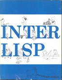

Interlisp is a software development environment, originating from Xerox PARC in the 1970s and 1980s. supporting software research in AI, computational linguistics, graphical user interfaces, hypertext, and other research areas. Software development in Interlisp-D is a different experience than is common, even today. The features of structure editing, source code management, code analysis and cross-referencing combined to support rapid incremental development. The 1992 ACM Software System Award was awarded to the Interlisp system for pioneering work in programming environments.
Interlisp evolved from an interactive terminal style programming tool to Interlisp-D – GUI and the entire operating system for the Xerox Lisp machines (called D-machines, named Dorado, Dolphin, Dandelion, Daybreak) with a common byte-code virtual machine. The virtual machine was then ported to C for Sun Unix and many other Unix systems, and the system was extended to support the Common Lisp standard as well.
Development of the system moved from Xerox PARC to a Xerox AI Systems division, to a spin-out company called Envos, to a smaller company called Venue. The system was called Interlisp, Interlisp-D, and various named releases (Koto, Lyric, Medley) until the name “Medley” was used for the whole thing.
Detailed History
A more extensive history of Interlisp can be found in the Interlisp Timeline.
1 - Bibliography
Interlisp Bibliography
(This bibliography is kept in sync with a Zotero collection Library
A large high-speed general-purpose digital computer (IBM 7090) was programmed to solve elementary symbolic integration problems at approximately the level of a good college freshman. The program is called SAINT, an acronym for "Symbolic Automatic INTegrator." This paper discusses the SAINT program and its performance. SAINT performs indefinite integration. It also performs definite and multiple integration when these are trivial extensions of indefinite integration. It uses many of the methods and heuristics of students attacking the same prombles. SAINT took an average of two minutes each to solve 52 of the 54 attempted problems taken from the Massachusetts Institute of Technology freshman calculus final examinations. Based on this and other experiments with SAINT, some conclusions coneering computer solution of such problems are: (1) Pattern recognition is of fundamental importance. (2) Great benefit would have been derived from a large memory and more convenient symbol manipulating facilities. (3) The solution of a symbolic integration problem by a commercially available computer is far cheaper and faster than by man.
This article describes a notation and a programming language for expressing, from within a LISP system, string transformations such as those performed in COMIT or SNOBOL. A simple transformation (or transformation rule) is specified by providing a pattern which must match the structure to be transformed and a format which specifies how to construct a new structure according to the segmentation specified by the pattern. The patterns and formats are greatly generalized versions of the left-half and right-half rules of COMIT and SNOBOL. For example, elementary patterns and formats can be variable names, results of computations, disjunctive sets, or repeating subpatterns; predicates can be associated with elementary patterns which check relationships among separated elements of the match; it is no longer necessary to restrict the operations to linear strings since elementary patterns can themselves match structures. The FLIP language has been implemented in LISP 1.5, and has been successfully used in such disparate tasks as editing LISP functions and parsing Kleene regular expressions.
In an ideal list-processing system there would be enough core memory to contain all the data and programs. The paper describes a number of techniques used to build a LISP system which utilizes a drum for its principal storage medium, with a surprisingly low time-penalty for use of this slow storage device. The techniques include careful segmentation of system programs, allocation of virtual memory to allow address arithmetic for type determination, and a special algorithm for building reasonably linearized lists. A scheme is described for binding variables which is good in this environment and allows for complete compatibility between compiled and interpreted programs with no special declarations.
The paper discusses some of the considerations involved in designing and implementing a pattern matching or COMIT feature inside of LISP. The programming language FLIP is presented here as a paradigm for such a feature. The design and implementation of FLIP discussed below emphasizes compact notation and efficiency of operation. In addition, FLIP is a modular language and can be readily extended and generalized to include features found in other pattern driven languages such as CONVERT and SNOBOL. This makes it extremely versatile. The development of this paper proceeds from abstract considerations to specific details. The syntax and semantics of FLIP are presented first, followed by a discussion of the implementation with especial attention devoted to techniques used for reducing the number of conses required as well as improving search strategy. Finally FLIP is treated as a working system and viewed from the users standpoint. Here we present some of the additions and extensions to FLIP that have evolved out of almost two years of experimentation. These transform it from a notational system into a practical and useful programming system.
In an ideal list-processing system there would be enough core memory to contain all the data and programs. Described in this paper are a number of techniques that have been used to build a LISP system utilizing a drum for its principal storage medium, with a surprisingly low time penalty for use of this slow storage device. The techniques include careful segmentation of system programs, allocation of virtual memory to allow address arithmetic for type determination, and a special algorithm for building reasonably linearized lists. A scheme for binding variables is described which is good in this environment and allows for complete compatibility between compiled and interpreted programs with no special declarations.
Bobrow, Daniel G.; Darley, D. Lucille; Deutsch, L. Peter; Murphy, Daniel L.; Teitelman, Warren
Notes
Section: Technical Reports
The report describes the LISP system implemented at BBN on the SDS 940 Computer. This LISP is an upward compatible extension of LISP 1.5 for the IBM 7090, with a number of new features which make it work well as an on-line language. These new features include tracing, and conditional breakpoints in functions for debugging and a sophisticated LISP oriented editor. The BBN 940 LISP SYSTEM has a large memory store approximately 50,000 free words utilizing special paging techniques for a drum to provide reasonable computation times. The system includes both an interpreter, a fully compatible compiler, and an assembly language facility for inserting machine code subroutines.
Daniel G. Bobrow; D. Lucille Darley; L. Peter Deutsch; Daniel L. Murphy; Warren Teitelman
This report describes the LISP system implemented at BBN on the SDS 940 Computer. This LISP is an upward compatible extension of LISP 1.5 for the IBM 7090, with a number of new features which make it work well as an on-line language. These new features include tracing, and conditional breakpoints in functions for debugging and a sophisticated LISP oriented editor. The BBN 940 LISP SYSTEM has a large memory store (approximately 50,000 free words) utilizing special paging techniques for a drum to provide reasonable computation times. The system includes both an interpreter, a fully compatible compiler, and an assembly language facility for inserting machine code subroutines.
When compared with a drawing on paper, the pictures presented by today's computer display equipment are sadly lacking in resolution. Most modern display equipment uses 10 bit digital to analog converters, providing for display in a 1024 by 1024 square raster. The actual resolution available is usually somewhat less since adjacent spots or lines will overlap. Even large-screen displays have limited resolution, for although they give a bigger picture, they also draw wider lines so that the amount of material which can appear at one time is still limited. Users of larger paper drawings have become accustomed to having a great deal of material presented at once. The computer display scope alone cannot serve the many tasks which require relatively large drawings with fine details.
The problem of the use of two levels of storage for programs is explored in the context of a LISP system which uses core memory as a buffer for a large virtual memory stored on a drum. Details of timing are given for one particular problem.
This first (long delayed) LISP Bulletin contains samples of most of those types of items which the editor feels are relevant to this publication. These include announcements of new (i.e. not previously announced here) implementations of LISP (or closely related) systems; quick tricks in LISP; abstracts of LISP related papers; short writeups and listings of useful programs; and longer articles on problems of general interest to the entire LISP community. Printing of these last articles in the Bulletin does not interfere with later publications in formal journals or books. Short write-ups of new features added to LISP are of interest, preferably upward compatible with LISP 1.5, especially if they are illustrated by programming examples.
This document describes the BBN-LISP system currently implemented on the SDS 940. It is a dialect of LISP 1.5 and the differences between IBM 7090 version and this system are described in Appendix 1 and 2. Principally, this system has been expanded from the LISP 1.5 on the 7090 in a number of different ways. BBN-LISP is designed to utilize a drum for storage and to provide the user a large virtual memory, with a relatively small penalty in speed (using special paging techniques described in Bobrow and Murphy 1967).
This paper describes a research effort and programming system designed to facilitate the production of programs. Unlike automated programming, which focuses on developing systems that write programs, automated programmering involves developing systems which automate (or at least greatly facilitate) those tasks that a programmer performs other than writing programs: e.g., repairing syntactical errors to get programs to run in the first place, generating test cases, making tentative changes, retesting, undoing changes, reconfiguring, massive edits, et al., plus repairing and recovering from mistakes made during the above. When the system in which the programmer is operating is cooperative and helpful with respect to these activities, the programmer can devote more time and energy to the task of programming itself, i.e., to conceptualizing, designing and implementing. Consequently, he can be more ambitious, and more productive.
This paper presents a machine designed for compact representation and rapid execution of LISP programs. The machine language is a factor of 2 to 5 more compact than S-expressions or conventional compiled code, and the compiler is extremely simple. The encoding scheme is potentially applicable to data as well as program. The machine also provides for user-defined data structures.
A preliminary version of QLISP is described. QLISP permits free intermingling of QA4-like constructs with INTERLISP code. The preliminary version contains features similar to those of QA4 except for the backtracking of control environments. It provides several new features as well. This preliminary manual presumes a familiarity with both INTERLISP and the basic concepts of QA4. It is intended to update rather than replace the existing documentation of QA4.
Many control and access environment structures require that storage for a procedure activation exist at times when control is not nested within the procedure activated. This is straightforward to implement by dynamic storage allocation with linked blocks for each activation, but rather expensive in both time and space. This paper presents an implementation technique using a single stack to hold procedure activation storage which allows retention of that storage for durations not necessarily tied to control flow. The technique has the property that, in the simple case, it runs identically to the usual automatic stack allocation and deallocation procedure. Applications of this technique to multitasking, coroutines, backtracking, label-valued variables, and functional arguments are discussed. In the initial model, a single real processor is assumed, and the implementation assumes multiple-processes coordinate by passing control explicitly to one another. A multiprocessor implementation requires only a few changes to the basic technique, as described.
Program verification refers to the idea that the intent or effect of a program can be stated in a precise way that is not a simple "rewording" of the program itself, and that one can prove (in the mathematical sense) that a program actually conforms to a given statement of intent. This thesis describes a software system which can verify (prove) some non-trivial programs automatically. The system described here is organized in a novel manner compared to most other theorem-proving systems. It has a great deal of specific knowledge about integers and arrays of integers, yet it is not "special-purpose", since this knowledge is represented in procedures which are separate from the underlying structure of the system. It also incorporates some knowledge, gained by the author from both experiment and introspection, about how programs are often constructed, and uses this knowledge to guide the proof process. It uses its knowledge, plus contextual information from the program being verified, to simplify the theorems dramatically as they are being constructed, rather than relying on a super-powerful proof procedure. The system also provides for interactive editing of programs and assertions, and for detailed human control of the proof process when the system cannot produce a proof (or counter-example) on its own.
INTERLISP (INTERactive LISP) is a LISP system currently implemented on the DEC PDP-10 under the BBN TENEX time sharing system<*R1>. INTERLISP is designed to provide the user access to the large virtual memory allowed by TENEX, with a relatively small penalty in speed (using special paging techniques described in <*R2>). Additional data types have been added, including strings, arrays, and hash association tables (hash links). The system includes a compatible compiler and interpreter. Machine code can be intermixed with INTERLISP expressions via the assemble directive of the compiler. The compiler also contains a facility for "block compilation" which allows a group of functions to be compiled as a unit, suppressing internal names. Each successive level of computation, from interpreted through compiled, to block-compiled provides greater speed at a cost of debugging ease.
Several conflicting goal must be resolved in deciding on a set of display facilities for Lisp: ease of lisp, efficient access to hardware facilities, and device- and system-independence. This memo suggests a set of facilities constructed in two layers: a lower layer that gives direct access to the Alto bitmap capability, while retaining Lisp's tradition of freeing the programmer from storage allocation worries, and an upper Iayer that uses the lower (on the Alto) or a character-stream protocol (for VTS, on MAXC) to provide for writing strings, scrolling, edting, etc. on the screen,
Documentation for INTERLISP in the form of the INTERLISP Reference Manual is now available and may be obtained from Warren Teitelman, Xerox Palo Alto Research Center. The new manual replaces all existing documentation, and is completely up to date (as to January, 1974). The manual is available in either loose-leaf or bound form. The lose-leaf version (binders not supplied) comes with printed separator tabs between the chapters. The bound version also includes colored divider pages between chapters, and is printed on somewhat thinner paper than the loose-leaf version, in an effort to make it 'portable' (the manual being approximately 700 pages long). Both versions contain a complete master index (approximately 1600 entries), as well as a separate index for each chapter. Although the manual is intended primarily to be used for reference, many chapters, e.g., the programmer's assistant, do-what-I-mean, CLISP, etc., include introductory and tutorial material. The manual is available in machine-readable form, and an on-line question-answering system using the manual as a data base is currently being implemented.
In current machine designs, a machine address gives the user direct access to a single piece of information, namely the contents of that machine word. This note is based on the observation that it is often useful to associate additional information, with some (relatively few) address locations determined at run time, without the necessity of preallocating the storage at all possible such addresses. That is, it can be useful to have an effective extra bit, field, or address in some words without every word having to contain a bit (or bits) to mark this as a special case. The key idea is that this extra associated information can be found by a table search. Although it could be found by any search technique (e.g. linear, binary sorted, etc.), we suggest that an appropriate low overhead mechanism is to use hash search on a table in which the key is the address of the cell to be augmented.
This report describes the file system for the experimental large file management support system currently being implemented at SRI. INTERLISP, an interactive, development-oriented computer programming system, has been augmented to support applications requiring large data bases maintained on secondary store. The data base support programs are separated into two levels an advanced file system and relational data base management procedures. The file system allows programmers to make full use of the capabilities of on-line random access devices using problem related symbolic primitives rather than page and word numbers. It also performs several useful data storage functions such as data compression, sequencing, and generation of symbols which are unique for a file.
This paper gives a tutorial introduction to INTERLISP/360-370, a subset of INTERLISP, which can be implemented on IBM/360 and similar systems. Descriptions of a large number of functions in INTERLISP with numerous examples, exercises and solutions are contained. The use of edit, break, advice, file handling and compiler are given and both interactive and batch use of the system is taken care of.
Program verification refers to the idea that the intent or effect of a program can be stated in a precise way that is not a simple "rewording" of the program itself, and that one can prove (in the mathematical sense) that a program actually conforms to a given statement of intent. This thesis describes a software system which can verify (prove) some non-trivial programs automatically. The system described here is organized in a novel manner compared to most other theorem-proving systems. IL has a great deal of specific knowledge about integers and arrays of integers, yet it is not "special-purpose", since this knowledge is represented in procedures which are separate from the underlying structure of the system. It also incorporates some knowledge, gained by the author from both experiment and introspection, about how programs are often constructed, and uses this knowledge to guide the proof process. It uses its knowledge, plus contextual information from the program being verified, to simplify the theorems dramatically as they are being constructed, rather than relying on a super-powerful proof procedure. The system also provides for interactive editing of programs and assertions, and for detailed human control of the proof process when the system cannot produce a proof (or counter-example) on its own.
This paper describes a new way of solving the storage reclamation problem for a system such as Lisp that allocates storage automatically from a heap, and does not require the programmer to give any indication that particular items are no longer useful or accessible. A reference count scheme for reclaiming non-self-referential structures, and a linearizing, compacting, copying scheme to reorganize all storage at the users discretion are proposed. The algorithms are designed to work well in systems which use multiple levels of storage, and large virtual address space. They depend on the fact that most cells are referenced exactly once, and that reference counts need only be accurate when storage is about to be reclaimed. A transaction file stores changes to reference counts, and a multiple reference table stores the count for items which are referenced more than once.
Notes
Conference Name: IEEE Transactions on Computers
Clisp is an attempt to make Lisp programs easier to read and write by extending the syntax of Lisp to include infix operators, IF-THEN statements, FOR-DO-WHILE statements, and similar Algol-like constructs, without changing the structure or representation of the language. Clisp is implemented through Lisp's error handling machinery, rather than by modifying the interpreter. When an expression is encountered whose evaluation causes an error, the expression is scanned for possible Clisp constructs, which are then converted to the equivalent Lisp expressions. Thus, users can freely intermix Lisp and Clisp without ut having to distinguish which is which. Emphasis in the design and development of Clisp has been on the system aspects of such a facility, with the goal of producing a useful tool, not just another language. To this end, Clisp includes interactive error correction and many "do-what-I-mean" features.
This report describes measurements performed for the purpose of determining areas of potential improvement to the efficiency of INTERLISP running under TENEX.
This thesis is about list structures: how they are used in practice, how they can be moved and copied efficiently, and how they can be represented by space-saving encodings. The approach taken to these subjects is mainly empirical.
Measurement results are based on five large programs written in Interlisp, a sophisticated Lisp system that runs on the PDP-10.
The contract covered by this annual report includes a variety of activities and services centering around the continued growth and well-being of INTERLISP, a large, interactive system widely used in the ARPA community for developing advanced and sophisticated computer-based systems.
Qlisp: a language for the interactive development of complex systems
Sacerdoti, Earl D.; Fikes, Richard E.; Reboh, Rene; Sagalowicz, Daniel; Waldinger, Richard J.; Wilber, B. Michael
The INTERLISP Virtual Machine is the environment in which the INTERLISP System is implemented. It includes such abstract objects as "Literal Atoms", "List Cells", "Integers", etc., the basic LISP functions for manipulating them, the underlying program control and variable binding mechanisms, the input/output facilities, and interrupt processing facilities. In order to Implement the INTERLISP System (as described in "The INTERLISP Reference Manual" by W. Teitelman, et. al.) on some physical machine, it is only necessary to implement the INTERLISP Virtual Machine, since Virtual Machine compatible source code for the rest of the INTERLISP System can be obtained from publicly available files. This document specifies the behavior of the INTERLISP Virtual Machine from the implementor's point of view. That is, it is an attempt to make explicit those things which must be implemented to allow the INTERLISP System to run on some machine.
This paper continues and extends previous work by the author in developing systems which provide the user with various forms of explicit and implicit assistance, and in general co-operate with the user in the development of his programs. The system described in this paper makes extensive use of a bit map display and pointing device (a mouse) to significantly enrich the user's interactions with the system, and to provide capabilities not possible with terminals that essentially emulate hard copy devices. For example, any text that is displayed on the screen can be pointed at and treated as input, exactly as though it were typed, i.e. the user can say use this expression or that value, and then simply point. The user views his programming environment through a collection of display windows, each of which corresponds to a different task or context. The user can manipulate the windows, or the contents of a particular window, by a combination of keyboard inputs or pointing operations. The technique of using different windows for different tasks makes it easy for the user to manage several simultaneous tasks and contexts, e.g. defining programs, testing programs, editing, asking the system for assistance, sending and receiving messages, etc. and to switch back and forth between these tasks at his convenience.
This paper continues and extends previous work by the author in developing systems which provide the user with various forms of explicit and implicit assistance, and in general cooperate with the user in the development of his programs. The system described in this paper makes extensive use of a bit map display and pointing device (a mouse) to significantly enrich the user's interactions with the system, and to provide capabilities not possible with terminals that essentially emulate hard copy devices. For example, any text that is displayed on the screen can be pointed at and treated as input, exactly as though it were typed, i.e., the user can say use this expression or that value, and then simply point. The user views his programming environment through a collection of display windows, each of which corresponds to a different task or context. The user can manipulate the windows, or the contents of a particular window, by a combination of keyboard inputs or pointing operations. The technique of using different windows for different tasks makes it easy for the user to manage several simultaneous tasks and contexts, e.g., defining programs, testing programs, editing, asking the system for assistance, sending and receiving messages, etc and to switch back and forth between these tasks at his convenience.
This report describes briefly a set of display primitives that we have developed at PARC toextend the capabilities of InterLisp[l]. These primitives are designed to operate a raster-scanned display, and concentrate on facilities for placing text carefully on the display and for moving chunks of an already-created display.
One of the major stumbling blocks to more effective used computers by naive users is the lack of natural means of communication between the user and the computer system. This report discusses a paradigm for constructing efficient and friendly man-machine interface systems involving subsets of natural language for limited domains of discourse. As such this work falls somewhere between highly constrained formal language query systems and unrestricted natural language under-standing systems. The primary purpose of this research is not to advance our theoretical under-standing of natural language but rather to put forth a set of techniques for embedding both semantic/conceptual and pragmatic information into a useful natural language interface module. Our intent has been to produce a front end system which enables the user to concentrate on his problem or task rather than making him worry about how to communicate his ideas or questions to the machine.
This paper presents the design of an Interlisp system running on a microprogrammed minicomputer. We discuss the constraints imposed by compatibility requirements and by the hardware, the important design decisions, and the most prominent successes and failures of our design, and offer some suggestions for future designers of small Lisp systems. This extended abstract contains only qualitative results. Supporting measurement data will be presented at MICRO-11.
Notes
Publisher: Institute of Electrical and Electronics Engineers
Report Number: 11
Fatcat ID: release_q5bn52bkmvgfnfpyj3fa6wfnzy
The process of developing a computer system is not only inherently interesting; it also leads to significant organization concepts that the builders are often impelled to share with others. So it was in our development of the Maxcl and Maxc2 time-sharing systems at the Xerox Palo Alto Research Center between 1971 and 1977. From this development came some ideas of system organization that are now seen to have contributed to the success of the effort:
• The high availability achieved is attributable to the simple microprogrammable organization of the machines.
• Microprogramming organization promotes simplicity by placing much of the complexity in firmware.
• This organization of a computer provides the environment for multiple instruction sets.
• Causes of failure in integrated circuitry were evenly distributed, but memory error correction was found to be important to overall reliability.
• Tools for software and firmware development and design automation are necessary for efficient development.
This paper continues and extends previous work by the author in developing systems which provide the user with various forms of explicit and implicit assistance, and in general co-operate with the user in the development of his programs. The system described in this paper makes extensive use of a bit map display and pointing device (a mouse) to significantly enrich the user's interactions with the system, and to provide capabilities not possible with terminals that essentially emulate hard copy devices. For example, any text that is displayed on the screen can be pointed at and treated as input, exactly as though it were typed, i.e. the user can say use this expression or that value, and then simply point. The user views his programming environment through a collection of display windows, each of which corresponds to a different task or context. The user can manipulate the windows, or the contents of a particular window, by a combination of keyboard inputs or pointing operations. The technique of using different windows for different tasks makes it easy for the user to manage several simultaneous tasks and contexts, e.g. defining programs, testing programs, editing, asking the system for assistance, sending and receiving messages, etc. and to switch back and forth between these tasks at his convenience.
List structures provide a general mechanism for representing easily changed structured data, but can introduce inefficiencies in the use of space when fields of uniform size are used to contain pointers to data and to link the structure. Empirically determined regularity can be exploited to provide more space-efficient encodings without losing the flexibility inherent in list structures. The basic scheme is to provide compact pointer fields big enough to accommodate most values that occur in them and to provide “escape” mechanisms for exceptional cases. Several examples of encoding designs are presented and evaluated, including two designs currently used in Lisp machines. Alternative escape mechanisms are described, and various questions of cost and implementation are discussed. In order to extrapolate our results to larger systems than those measured, we propose a model for the generation of list pointers and we test the model against data from two programs. We show that according to our model, list structures with compact cdr fields will, as address space grows, continue to be compacted well with a fixed-width small field. Our conclusion is that with a microcodable processor, about a factor of two gain in space efficiency for list structure can be had for little or no cost in processing time.
Raster-scan display terminals can significantly imrpove the quality of interaction with conventional computer systems. the design of a graphics package to provide a "window" into the extensive programming environment of Interlisp is presented. Two aspects of the package are described: first, the functional view of display output and interactive input facilities as seen by the programmer, and second, the methods used to link the display terminal to the main computer via a packet-switched computer network. Recommendations are presented for designing operating systems and programming languages so as to simplifly attaching display terminals. An appendix contains detailed documentation of the graphics package.
Raster-scan display terminals can significantly improve the quality of interaction with conventional computer systems. The design of a graphics package to provide a “window” into the extensive programming environment of interlisp is presented. Two aspects of the package are described: first, the functional view of display output and interactive input facilities as seen by the programmer, and second, the methods used to link the display terminal to the main computer via a packet-switched computer network. Recommendations are presented for designing operating systems and programming languages so as to simplify attaching display terminals.
The Interlisp Virtual Machine is the environment in which the Interlisp System is implemented. It includes such abstract objects as "Literal Atoms", "List Cells", "Integers", etc., the basic LISP functions for manipulating them, the underlying program control and variable binding mechanisms, the input/output facilities, and interrupt processing facilities. In order to Implement the Interlisp System (as described in "The Interlisp Reference Manual" by W. Teitelman, et. al.) on some physical machine, it is only necessary to implement the Interlisp Virtual Machine, since Virtual Machine compatible source code for the rest of the Interlisp System can be obtained from publicly available files. This document specifies the behavior of the Interlisp Virtual Machine from the implementor's point of view. That is, it is an attempt to make explicit those things which must be implemented to allow the Interlisp System to run on some machine.
This paper describes in detail the most interesting aspects of ByteLisp, a transportable Lisp system architecture which implements the Interlisp dialect of Lisp, and its first implementation, on a microprogrammed minicomputer called the Alto. Two forthcoming related papers will deal with general questions of Lisp machine and system architecture, and detailed measurements of the Alto ByteLisp system described here. A highly condensed summary of the series was published at MICRO-11 in November 1978.
This dissertation describes a programming tool, implemented in Lisp, called SCOPE. The basic idea behind SCOPE can be stated simply: SCOPE analyzes a user's programs, remembers what it sees, is able to answer questions based on the facts it remembers, and is able to incrementally update the data base when a piece of the program changes. A variety of program information is available about cross references, data flow and program organization. Facts about programs are stored in a data base: to answer a question, SCOPE retrieves and makes inferences based on information in the data base. SCOPE is interactive because it keeps track of which part of the programs have changed during the course of an editing and debugging session, and is able to automatically and incrementally update its data base. Because SCOPE performs whatever re-analysis is necessary to answer the question when the question is asked. SCOPE maintains the illusion that the data base is always up to date—other than the additional wait time, it is as if SCOPE knew the answer all along.
SCOPE'S foundation is a representation system in which properties of pieces of programs can be expressed. The objects of SCOPE'S language are pieces of programs, and in part, definitions of symbols—e.g., the definition of a procedure or a data structure. SCOPE does not model properties of individual statements or expressions in the program; SCOPE knows only individual facts about procedures variables data structures and other pieces of a program which can be assigned as the definition of symbols. The facts are relations between the name of a definition and other symbols. For example, one of the relations that SCOPE keeps track of is Call: Call[FN₁,FN₂] holds if the definition whose name is FN₁ contains a call to a procedure named FN₂.
SCOPE has two interfaces: one to the user and one to other programs. The user interface is an English-like command language which allows for a uniform command structure and convenient defaults: the most frequently used commands are the easiest to type. All of the power available with the command language is accessible through the program interface as well. The compiler and various other utilities use the program interface.
We describe the local optimization phase of a compiler for translating the INTERLISP dialect of LISP into stack-architecture (0-address) instruction sets. We discuss the general organization of the compiler, and then describe the set of optimization techniques found most useful, based on empirical results gathered by compiling a large set of programs. The compiler and optimization phase are machine independent, in that they generate a stream of instructions for an abstract stack machine, which an assembler subsequently turns into the actual machine instructions. The compiler has been in successful use for several years, producing code for two different instruction sets.
In INTERLISP we find a number of embedded languages such as the iterative statement and the pattern match facility in the CLISP package, the editor and makefile languages and so forth. We will in this paper concentrate on the problem of extending the LISP language and discuss a method to compile such extensions. We propose the language to be implemented through an interpreter (written in LISP) and that compilation of statements in such an embedded language is done through partial evaluation. The interpreter is partially evaluated with respect to the actual statements, and an object program in LISP is obtained. This LISP code can further be compiled to machine code by the standard LISP compiler. We have implemented the iterative statement and a CLISP-like pattern matcher and used a program manipulation system to generate object programs in LISP. Comparisons will be made with the corresponding INTERLISP implementations, which use special purpose compilers in order to generate the LISP code.
Burton, Richard R.; Masinter, L. M.; Bobrow, Daniel G.; Haugeland, Willie Sue; Kaplan, Ronald M.; Sheil, B. A.
DoradoLisp is an implementation of the Interlisp programming system on a large personal computer. It has evolved from AltoLisp, an implementation on a less powerful machine. The major goal of the Dorado implementation was to eliminate the performance deficiencies of the previous system. This paper describes the current status of the system and discusses some of the issues that arose during its implementation. Among the techniques that helped us meet our performance goal were transferring much of the kernel software into Lisp, intensive use of performance measurement tools to determine the areas of worst performance, and use of the Interlisp programming environment to allow rapid and widespread improvements to the system code. The paper lists some areas in which performance was critical and offers some observations on how our experience might be useful to other implementations of Interlisp.
Burton, Richard R.; Kaplan, Ronald M.; Masinter, B.; Sheil, B. A.; Bell, A.; Bobrow, D. G.; Deutsch, L. P.; Haugeland, W. S.
This report consists of five papers on Interlisp-D, a refinement and implementation of the Interlisp virtual machine [Moore, 76] which supports the Interlisp programming system [Teitelman et al., 78] on the Dolphin and Dorado personal computers.
In the fall of 1978 we decided to produce a special issue of the SIGART Newsletter devoted to a survey of current knowledge representation research. We felt that there were twe useful functions such an issue could serve. First, we hoped to elicit a clear picture of how people working in this subdiscipline understand knowledge representation research, to illuminate the issues on which current research is focused, and to catalogue what approaches and techniques are currently being developed. Second -- and this is why we envisaged the issue as a survey of many different groups and projects -- we wanted to provide a document that would enable the reader to acquire at least an approximate sense of how each of the many different research endesvours around the world fit into the field as a whole.It would of course be impossible to produce a final or definitive document accomplishing these goals: rather, we hoped that this survey could initiate a continuing dialogue on issues in representation, a project for which this newsletter seems the ideal forum. It has been many months since our original decision was made, but we are finally able to present the results of that survey. Perhaps more than anything else, it has emerged as a testament to an astounding range and variety of opinions held by many different people in many different places.The following few pages are intended as an introduction to the survey as a whole, and to this issue of the newsletter. We will briefly summarize the form that the survey took, discuss the strategies we followed in analyzing and tabulating responses, briefly review the overall sense we received from the answers that were submitted, and discuss various criticisms which were submitted along with the responses. The remainder of the volume has been designed to be roughly self-explanatory at each point, so that one may dip into it at different places at will. Certain conventions, however, particularly regarding indexing and tabulating, will also be explained in the remainder of this introduction.As editors, we are enormously grateful to the many people who devoted substantial effort to responding to our survey. It is our hope that the material presented here will be interesting and helpful to our readers, and that fruitful discussion of these and other issues will continue energetically and enthusiastically into the future.
Abstract machine definitions have been recognized as convenient and powerful tools for enhancing software portability. One such machine, the Interlisp Virtual Machine, is examined in this thesis. We present the Multilisp System as an implementation of the Virtual Machine and discuss some of the design criteria and difficulties encountered in mapping the Virtual Machine onto a particular environment. On the basis of our experience with Multilisp we indicate several weaknesses of the Virtual Machine which impair its adequacy as a basis for a portable Interlisp System.
The Interslip-D project was formed to develop a personal machine implementation of Interlisp for use as an environment for research in artificial intelligence and cognitive science [Burton et al., 80b]. This note describes the principal developments since our last report almost a year ago [Burton et al., 80a].
Since November 1979, a group at the Information Sciences Institute of the University of Southern California has been working on an implementation of Interlisp for the DEC VAX-series computers. This report is a description of the current status, future prospects, and estimated character of that Interlisp-VAX implementation. It is the result of several days of discussion with those at ISI involved with the implementation (Dave Dyer, Mans Koomen, Ray Bates, Dan Lynch): with John L. White of MIT, who is working on an implementation of another Lisp for the VAX (NIL); with the implementors of Interlisp-Jericho at BBN (Alice Hartley, Norton Greenfeld, Martin Yonke, John Vittal, Frank Zdybel, Jeff Gibbons, Daryle Lewis); with the implementors of Franz Lisp and Berkeley Unix at U.C. Berkeley (Richard Fateman, Bill Joy, Keith Sklower, John Foderaro); and with my colleagues at Xerox PARC.
An earlier draft of this report was circulated to the parties involved in the Interlisp-VAX discussions. This document has been revised as a result of comments received.
DED is a display-oriented editor that was designed to add the power and convenience of display terminals to INTERLISP's teletype-oriented structure editor. DED divides the display screen into a Prettyprint Region and an Interaction Region. The Prettyprint Region gives a prettyprinted view of the structure being edited; the Interaction Region contains the interaction between the user and INTERLISP's standard editor. DEDs prettyprinter allows ellision, and the user may zoom in or out to see the expression being edited with more or less detail. There are several arrow keys which allow the user to change quite easily the locus of attention in certain structural ways, as well as a menu-like facility for common command sequences. Together, these features provide a display-facility that considerably augments INTERLISP's otherwise quite sophisticated user interface.
The DIPMETER ADVISOR program is an application of Al and Expert System techniques to the problem of inferring subsurface geologic structure. It synthesizes techniques developed in two previous lines of work, rulte-based systems and signal understanding programs. This report on the prototype system has four main concerns. First, we describe the task and characterize the various bodies of knowledge required. Second, we describe the design of the system we have built and the level of performance it has currently reached. Third, we use this task as a case study and examine it in the light of other, related efforts, showing how particular characteristics of this problem have dictated a number of design decisions. We consider the character of the interpretation hypotheses generated and the sources of the expertise involved. Finally, we discuss future directions of this early effort. We describe the problem of "shallow knowledge" in expert systems and explain why this task appears to provide an attractive setting for exploring the use of deeper models.
Integration, extensibility, and ease of modification made Interlisp unique and powerful. Its adaptations will enhance the power of the coming world of personal computing and advanced displays.
The TXDT package is a collection of INTERLISP programs designed for those who wish to build text editors in INTERLISP. TXDT provides a new INTERLISP data type, called a buffer, and programs for efficiently inserting, deleting, searching and manipulating text in buffers. Modifications may be made undoable. A unique feature of TXDT is that an address may be "stuck" to a character occurrence so as to follow that character wherever it Is subsequently moved. TXDT also has provisions for fonts.
Bates, Raymond L.; Dyer, David; Koomen, Johannes A. G. M.
This paper presents some of the issues involved in implementing Interlisp [19] on a VAX computer [24] with the goal of producing a version that runs under UNIX[17], specifically Berkeley VM/UNIX. This implementation has the following goals:
• To be compatible with and functionally equivalent to Interlisp-10.
• To serve as a basis for future Interlisp implementations on other mainframe computers. This goal requires that the implementation to be portable.
• To support a large virtual address space.
• To achieve a reasonable speed.
The implementation draws directly from three sources, Interlisp-10 [19], Interlisp-D [5], and Multilisp [12]. Interlisp-10, the progenitor of all Interlisps, runs on the PDP-10 under the TENEX [2] and TOPS-20 operating systems. Interlisp-D, developed at Xerox Palo Alto Research Center, runs on personal computers also developed at PARC. Multilisp, developed at the University of British Columbia, is a portable interpreter containing a kernel of Interlisp, written in Pascal [9] and running on the IBM Series/370 and the VAX. The Interlisp-VAX implementation relies heavily on these implementations. In turn, Interlisp-D and Multilisp were developed from The Interlisp Virtual Machine Specification [15] by J Moore (subsequently referred to as the VM specification), which discusses what is needed to implement an Interlisp by describing an Interlisp Virtual Machine from the implementors' point of view. Approximately six man-years of effort have been spent exclusively in developing Interlisp-VAX, plus the benefit of many years of development for the previous Interlisp implementations.
We describe an effort to translate the Interlisp KL-ONE system into FranzLisp to enable it to be run on a VAX . This effort has involved Tim Finin, Richard Duncan and Hassan Ait-Kaci from the University of Pennsylvania, Judy Weiner from Temple University, Jane Barnett from Computer Corporation of America and Jim Schmolze from Bolt Beranek and Newman. The primary motivation for this project was to make a version of KL-ONE available on a PDP 11/780 VAX . A VAX Interlisp is not yet available, although one is being written and will soon be available . Currently, the only substantial Lisp for a Vax is the Berkeley FranzLisp system. As a secondary motivation, we are interested in making KL-ONE more available in general - on a variety of Lisp dialects and machines.
In this paper, we discuss a display-oriented editor to aid in the construction of knowledge-based systems. We also report on our experiences concerning the utility of the editor.
This paper describes the operation and internal structure of a program called AQINTERLISP. revision IS-July-1983. AQINTERLISP is an interactive INTERLISP-I0 program for generalization and optimization of discriminant descriptions of object classes. The descriptions are expressed as disjunctive normal expressions in the variable valued logic system VLl [7]. Such expressions are unions of conjunctive statements (complexes) involving relations on multiple-valued variables. Input data to the program are sets of VLl events (sequences of attribute-value pairs) describing individual objects. Each event is associated with a given class name.
For further information on the VLl system the reader is referred to [7].
and for a detailed description of the theory behind the AQ algorithm the reader is referred to [8, 9].
Interlisp began with an implementation of the Lisp programming language for the PDP-1 at Bolt. Beranek and Newman in 1966. It was followed in 1967 by 940 Lisp, an upward compatible implementation for the SDS-940 computer. 940 Lisp was the first Lisp system to demonstrate the feasibility of using software paging techniques and a large virtual memory in conjunction with a list-processing system [Bobrow & Murphy, 1967]. 940 Lisp was patterned after the Lisp 1.5 implementation for CTSS at MIT, with several new facilities added to take advantage of its timeshared, on-line environment. DWIM, the Do-What-I-Mean error correction facility, was introduced into this system in 1968 by Warren Teitelman [Teitelman. 1969].
Stefik, Mark; Bobrow, Daniel G; Mittal, Sanjay; Conway, Lynn
Early this year fifty people took an experimental course at Xerox PARC on knowledge programming in Loops. During the course, they extended and debugged small knowledge systems in a simulated economics domain called Truckin'. Everyone learned how to use the Loops environment, formulated the knowledge for their own program, and represented it in Loops. At the end of the course a knowledge competition was run so that the strategies used in the different systems could be compared. The punchline to this story is that almost everyone learned enough about Loops to complete a small knowledge system in only three days. Although one must exercise caution in extrapolating from small experiments, the results suggest that there is substantial power in integrating multiple programming paradigms.
ROSS [7] is an object-oriented language developed for building knowledge-based simulations [4]. SWIRL [5, 6] is a program written in ROSS that embeds knowledge about defensive and offensive air battle strategies. Given an initial configuration of military forces, SWIRL simulates the resulting air battle. We have implemented ROSS and SWIRL in several different Lisp environments. We report upon this experience by comparing the various environments in terms of cpu usage, real-time usage, and various user aids.
Conversion of the LogLispLogic programming in Lisp Artificial Intelligence programming environment from its original RutgersUCI-Lisp RUCI-Lisp implementation to an InterLisp implementation is described. This report may be useful to researchers wishing to convert LogLisp to yet another Lisp dialect, or to those wishing to convert other RUCI-Lisp programs into InterLisp. It is also intended to help users of the InterLisp version of LogLisp to understand the implementation. The conversion process is described at a level aimed toward potential translators who might benefit from approaches taken and lessons learned. General issues of conversion of Lisp software between dialects are discussed, use of InterLisps dialect translation package is described, and specific issues of non-mechanizable conversion are addressed. The latter include dialect differences in function definitions, arrays, integer arithmetic, io, interrupts, and macros. Subsequent validation, compilation, and efficiency enhancement of the InterLisp version are then described. A brief users guide to the InterLisp version and points of contact for information on LogLisp software distribution are also provided. Author
Major dialect of LISP <34>, designed for high-resolution, bit-mapped display, distinguished by (a) use of in-core editor for structures, and thus code, (b) programming environment of tools for automatic error-correction, syntax (sic) extension and structure declaration/access, (c) implementation of almost-compatible dialects (Interlisp ) on several machines, (d) extensive usage of display orientated tools and facilities. Emphasis: Personal Lisp workstation, user interface tools.
We use our experience with the Dipmeter Advisor system for well-log interpretation as a case study to examine the development of commercial expert system. We discuss the nature of these systems as we see them in the coming decade, characteristics of the evolution process, development methods, and skills required in the development team. We argue that the tools and ideas of rapid prototyping and successive refinement accelerate the development process. We note that different types of people are required at different stages of expert system development: Those who are primarily knowledgeable in the domain, but who can use the framework to expand the domain knowledge; and those who can actually design and build expert systems. Finally, we discuss the problem of technology transfer and compare our experience with some of the traditional wisdom of expert system development.
This paper reports on recent developments of the ISI- Interlisp implementation of Interlisp on a VAX computer. ISI-Interlisp currently runs under UNIX, specifically the Berkeley VM/UNIX and VMS operating systems. Particular attention is paid to the current status of the implementation and the growing pains experienced in the last few years. Included is a discussion of the conversion from UNIX to VAX/VMS, recent modifications and improvements, current limitations, and projected goals. Since much of the recent effort has concerned performance tuning, our observations on this activity are included. ISI-Interlisp, formerly known as Interlisp-VAX, was reported in 1982 ACM Symposium on LISP and Functional Programming, August 1982 [1]. Experiences and recommendations since the 1982 LISP conference are presented.
Lenat, Douglas B.; Prakash, Mayank; Shepherd, Mary
The major limitations in building large software have always been (a) its brittleness when confronted by problems that were not foreseen by its builders, and (by the amount of manpower required. The recent history of expert systems, for example highlights how constricting the brittleness and knowledge acquisition bottlenecks are. Moreover, standard software methodology (e.g., working from a detailed "spec") has proven of little use in AI, a field which by definition tackles ill-structured problems. How can these bottlenecks be widened? Attractive, elegant answers have included machine learning, automatic programming, and natural language understanding. But decades of work on such systems have convinced us that each of these approaches has difficulty "scaling up" for want a substantial base of real world knowledge.
Report of a meeting held by the Geological Information Group at the British Petroleum Research Centre, Sunbury, 24 January 1985
This meeting, concerned mainly with computer manipulation of petroleum exploration data, attracted c. 95 participants. In addition to eight papers presented, there were two computer demonstrations of log analysis systems and a number of poster displays.
The morning session, concerned with large-scale, integrated hardware and software systems, was chaired by R. Howarth. R. Till of British Petroleum gave the opening paper concerning BP Exploration’s integrated database system. BP Exploration databases fall into three main groups: those containing largely numerical data; databases specifically concerned with text handling; and well-based databases. The ‘numerical’ databases, implemented under the ULTRA database management system (dbms), include a seismic data system, a generalized cartographic database and an earth constants database. Textual databases include a library information system and a Petroconsultants scout data database, both implemented under the BASIS dbms. The well-based systems include a generalized well-data database, a wireline log archive, storage and retrieval system, and a master well index; all three are implemented under the INGRES dbms. Two related BASIS databases contain geochemical and biostratigraphical data.
G. Baxter (co-author M. Hemingway) described the development of Britoil’s well log database which was prompted by the need to have rapid access to digitized wireline log data for c. 1500 wells on the UKCS. Early work involved both locating log information and digitizing those logs held in sepia form only. Each digitized log occupies approximately 1 Mbyte.
The Koto release of Interlisp-D provides a wide range of added functionality, increased performance and improved reliability.
Central among these is that Koto is the first release of Interlisp that supports the new Xerox 1185/1186 artificial inteilligence work stations, including the new features of these work stations such as the expanded 19" display, and the PC emulation option. Of course, like previous releases of Interlisp, Koto also supports the other current members of the 1100 series of machines, specifically the 1132 and various models of the 1108.
The Koto release of Interlisp-D provides a wide range of added functionality, increased performance and improved reliability Central among these is that Koto is the first release of Interlisp that supports the new Xerox 1185/1186 artificial intelligence work stations, including the new features of these work stations such as the expanded 19" display and the PC emulation option. Of course, like previous releases of Interlisp, Koto also supports the other current members of the 1100 series of machines, specifically the 1132 and various models of the 1108.
This paper introduces a special programming environment for the definition of grammars and for the implementation of corresponding parsers. In natural language processing systems it is advantageous to have linguistic knowledge and processing mechanisms separated. Our environment accepts grammars consisting of binary dependency relations and grammatical functions. Well-formed expressions of functions and relations provide constituent surroundings for syntactic categories in the form of two-way automata. These relations, functions, and automata are described in a special definition language.In focusing on high level descriptions a linguist may ignore computational details of the parsing process. He writes the grammar into a DPL-description and a compiler translates it into efficient LISP-code. The environment has also a tracing facility for the parsing process, grammar-sensitive lexical maintenance programs, and routines for the interactive graphic display of parse trees and grammar definitions. Translator routines are also available for the transport of compiled code between various LISP-dialects. The environment itself exists currently in INTERLISP and FRANZLISP. This paper focuses on knowledge engineering issues and does not enter linguistic argumentation.
The final report of the Stanford Lisp Performance Study, Performance and Evaluation of Lisp Systems is the first book to present descriptions on Lisp implementation techniques actually in use. It provides performance information using the tools of benchmarking to measure the various Lisp systems, and provides an understanding of the technical tradeoffs made during the implementation of a Lisp system. The study is divided into three parts. The first provides the theoretical background, outlining the factors that go into evaluating the performance of a Lisp system. The second part presents the Lisp implementations: MacLisp, MIT CADR, LMI Lambda, S-I Lisp, Franz Lisp, MIL, Spice Lisp, Vax Common Lisp, Portable Standard Lisp, and Xerox D-Machine. A final part describes the benchmark suite that was used during the major portion of the study and the results themselves.
Martz, Philip R.; Heffron, Matt; Griffith, Owen Mitch
Notes
Section: 23
DOI: 10.1021/bk‑1986‑0306.ch023
The SpinPro™ Ultracentrifugation Expert System is a computer program that designs optimal ultracentrifugation procedures to satisfy the investigator's research requirements. SpinPro runs on the IBM PC/XT. Ultracentrifugation is a common method in the separation of biological materials. Its capabilities, however, are too often under-utilized. SpinPro addresses this problem by employing Artificial Intelligence (AI) techniques to design efficient and accurate ultracentrifugation procedures. To use SpinPro, the investigator describes the centrifugation problem in a question and answer dialogue. SpinPro then offers detailed advice on optimal and alternative procedures for performing the run. This advice results in cleaner and faster separations and improves the efficiency of the ultracentrifugation laboratory.
Bobrow, Daniel G.; Kahn, Kenneth; Kiczales, Gregor; Masinter, Larry; Stefik, Mark; Zdybel, Frank
CommonLoops blends object-oriented programming smoothly and tightly with the procedure-oriented design of Lisp. Functions and methods are combined in a more general abstraction. Message passing is invoked via normal Lisp function call. Methods are viewed as partial descriptions of procedures. Lisp data types are integrated with object classes. With these integrations, it is easy to incrementally move a program between the procedure and object-oriented styles.
One of the most important properties of CommonLoops is its extensive use of meta-objects. We discuss three kinds of meta-objects: objects for classes, objects for methods, and objects for discriminators. We argue that these meta-objects make practical both efficient implementation and experimentation with new ideas for object-oriented programming.
CommonLoops' small kernel is powerful enough to implement the major object-oriented systems in use today.
LISP appears to be the language of choice among the developers of knowledge-based expert systems. Analysis of structures in INTERLISP environment is discussed in this paper. An interactive INTERLISP program is presented for analysis of frames which can be used as part of an expert system for computer-aided design of structures. Some of the concepts and characteristics of INTERLISP language are explained by referring to the INTERLISP program.
LISP, as a language, has been around for about 25 years [mcca78]. It was originally developed to support artificial intelligence (AI) research. At first, it seemed to be little noticed except by a small band of academics who implemented some of the early LISP interpreters and wrote some of the early AI programs. In the early 60’s, LISP began to diverge as various implementations were developed for different machines. McCarthy [mcca78] gives a short history of its early days.
The Loops knowledge programming system integrates function-oriented, system object-oriented, rule-oriented, and—something notfound in most other systems—access-oriented programming.
Halasz, Frank G.; Moran, Thomas P.; Trigg, Randall H.
NoteCards is an extensible environment designed to help people formulate, structure, compare, and manage ideas. NoteCards provides the user with a “semantic network” of electronic notecards interconnected by typed links. The system provides tools to organize, manage, and display the structure of the network, as well as a set of methods and protocols for creating programs to manipulate the information in the network. NoteCards is currently being used by more than 50 people engaged in idea processing tasks ranging from writing research papers through designing parts for photocopiers. In this paper we briefly describe NoteCards and the conceptualization of idea processing tasks that underlies its design. We then describe the NoteCards user community and several prototypical NoteCards applications. Finally, we discuss what we have learned about the system's strengths and weaknesses from our observations of the NoteCards user community.
We discuss the design and implementation of object-oriented datatypes for a sophisticated statistical analysis environment The discussion draws on our experience with an experimental statistical analysis system, called DINDE. DINDE resides in the integrated programming environment of a Xerox Interlisp-D machine running LOOPS. The discussion begins with our implementation of arrays, matrices, and vectors as objects in this environment. We then discuss an additional set of objects that are based on statistical abstractions rather than mathematical ones and describe their implementation in the DINDE environment.
This chapter discusses the power tools for programmers. Essentially, all of the intelligent programming tools described in this volume are at most experimental prototypes. Given that these tools are still quite far from being commercial realities, it is worthwhile to note that there is a completely different way in which artificial intelligence research has to help programmers. Artificial intelligence researchers are themselves programmers. Creating such programs is more a problem of exploration than implementation and does not conform to conventional software lifecycle models. The artificial intelligence programming community has always been faced with this kind of exploratory programming and has, therefore, had a head start on developing appropriate language, environment, and hardware features. Redundancy protects the design from unintentional change, the conventional programming technology restrains the programmer, and the programming languages used in exploratory systems minimize and defer constraints on the programmer.
A key constraint on the effectiveness of window-based human-computer interfaces is that the display screen is too small for many applications. This results in “window thrashing,” in which the user must expend considerable effort to keep desired windows visible. Rooms is a window manager that overcomes small screen size by exploiting the statistics of window access, dividing the user's workspace into a suite of virtual workspaces with transitions among them. Mechanisms are described for solving the problems of navigation and simultaneous access to separated information that arise from multiple workspaces.
Trigg, Randall H.; Suchman, Lucy A.; Halasz, Frank G.
This paper describes a project underway to investigate computer support for collaboration. In particular, we focus on experience with and extensions to NoteCards, a hypertext-based idea structuring system. The forms of collaboration discussed include draft-passing, simultaneous sharing and online presentations. The requirement that mutual intelligibility be maintained between collaborators leads to the need for support of annotative and procedural as well as substantive activities.
Ten Years of Window Systems - A Retrospective View
Teitelman, Warren
Both James Gosling and I currently work for SUN and the reason for my wanting to talk before he does is that I am talking about the past and James is talking about the future. I have been connected with eight window systems as a user, or as an implementor, or by being in the same building! I have been asked to give a historical view and my talk looks at window systems over ten years and features: the Smalltalk, DLisp (Interlisp), Interlisp-D, Tajo (Mesa Development Environment), Docs (Cedar), Viewers (Cedar), SunWindows and SunDew systems.
Trillium is a computer-based environment for simulating and experimenting with interfaces for simple machines. For the past four years it has been use by Xerox designers for fast prototyping and testing of interfaces for copiers and printers. This paper defines the class of “functioning frame” interfaces which Trillium is used to design, discusses the major concerns that have driven the design of Trillium, and describes the Trillium mechanisms chosen to satisfy them.
Karttunen, Lauri; Koskenniemi, Kimmo; Kaplan, Roland C.
This paper describes a system for compiling two-level phonological or orthographical rules into finite-state transducers. The purpose of this system, called TWOL, is to aid the user in developing a set of such rules for morphological generation and recognition.
Cunningham, Robert E.; Corbett, John D.; Bonar, Jeffrey G.
Notes
Section: Technical Reports
Chips is an interactive tool for developing software employing graphical humancomputer interfaces on Xerox Lisp machines. For the programmer, It provides a rich graphical interface for the creation of rich graphical interfaces. In the service of an end user, It provides classes for modeling the graphical relationships of objects on the screen and maintaining constraints between them. Several large applications have been developed with Chips including intelligent tutors for programming and electricity. Chips is implemented as a collection of customizable classes in the LOOPS object-oriented extensions to Interlisp-D. The three fundamental classes are 1 DomainObject which defines objects of the application domain - the domain for which the interface is being built - and ties together the various functionalities provided by the Chips system 2 DisplayObject which defines mouse-sensitive graphical objects and 3 Substrate which defines specialized windows for displaying and storing collections of instances of DisplayObject. A programmer creates an interface by specializing existing DomainObjects and drawing new Displayobjects with a graphics editor. Instances of DispalyObject and Substrate are assembled on screen to form the interface. Once the interface has been sketched in this manner, the programmer can build inward, creating all other parts of the application through the objects on the screen.
This paper reports on an investigation into the use of the NoteCards hypertext system for writing. We describe a wide variety of personal styles adopted by 20 researchers at Xerox as they “inhabit” NoteCards. This variety is displayed in each of their writing activities: notetaking, organizing and reorganizing their work, maintaining references and bibliographies, and preparing documents. In addition, we discuss the distinctive personal decisions made as to which activities are appropriate for NoteCards in the first place. Finally, we conclude with a list of recommendations for system designers arising from this work.
The Dipmeter Advisor is a knowledge-base system, linked to a computer work-station, designed to aid in the interpretation of dipmeter results through interaction between the interpreter and the "expert" system.
The system utilizes dipmeter results, other wireline log data, computer processed results such as LITHO*, and user-input local geological knowledge as the framework for the interpretation. A work session proceeds through a number of phases, which leads to first a structural, then a stratigraphic interpretation of the well data.
Conclusions made by the Dipmeter Advisor can be accepted, modified, or rejected by the interpreter at any stage of the work session. The user may also make his own conclusions and comments, which are stored as part of the final interpretation and become part of an updated knowledge-base for input to further field studies.
During my tenure as Chairman of the Department of Medicine at the University of Pittsburgh, 1955 to 1970, two points became clear in regard to diagnosis in internal medicine. The first was that the knowledge base in that field had become vastly too large for any single person to encompass it. The second point was that the busy practitioner, even though he knew the items of information pertinent to his patients correct diagnosis, often did not consider the right answer particularly if the diagnosis was an unusual disease.
I resigned the position of Chairman in 1970 intending to resume my position as Professor of Medicine. However, the University saw fit to offer me the appointment as University Professor (Medicine). The University of Pittsburgh follows the practice of Harvard University, established by President James Bryant Conant in the late 1930s, in which a University Professor is a professor at large and reports only to the president of the university. He has no department, no school and is not under administrative supervision by a dean or vice-president. Thus the position allows maximal academic freedom. In this new position I felt strongly that I should conduct worthwhile research. It was almost fifteen years since I had worked in my chosen field of clinical investigation, namely splanchnic blood flow and metabolism, and I felt that research in that area had passed me by. Remembering the two points mentioned earlier — the excessive knowledge base of internal medicine and the problem of considering the correct diagnosis — I asked myself what could be done to correct these problems. It seemed that the computer with its huge memory could correct the first and I wondered if it could not help as well with the second.
At that point I knew no more about computers than the average layman so I sought advice. Dr. Gerhard Werner, our Chairman of Pharmacology, was working with computers in an attempt to map all of the neurological centers of the human brain stem with particular reference to their interconnections and functions. He was particularly concerned about the actions of pharmacological agents on this complex system. Working with him on this problem was Dr. Harry Pople, a computer scientist with special interest in “artificial intelligence”. The problem chosen was so complex and difficult that Werner and Pople were making little progress.
Gerhard listened patiently to my ideas and promptly stated that he thought the projects were feasible utilizing the computer. In regard to the diagnostic component of my ambition he strongly advised that “artificial intelligence” be used. Pople was brought into the discussion and was greatly interested, I believe because of the feasibility of the project and the recognition of its practical application to the practice of medicine.
The upshot was that Pople joined me in my project and Werner and Pople abandoned the work on the brain stem. Pople knew nothing about medicine and I knew nothing about computer science. Thus the first step in our collaboration was my analysis for Pople of the diagnostic process. I chose a goodly number of actual cases from clinical pathological conferences (CPCs) because they contained ample clinical data and because the correct diagnoses were known. At each small step of the way through the diagnostic process I was required to explain what the clinical information meant in context and my reasons for considering certain diagnoses. This provided to Pople insight into the diagnostic process. After analyzing dozens of such cases I felt as though I had undergone a sort of “psychoanalysis”. From this experience Pople wrote the first computer diagnostic programs seeking to emulate my diagnostic process. This has led certain “wags” to nickname our project “Jack in the box”. For this initial attempt Pople used the LISP computer language. We were granted access to the PROPHET PDP-10, a time-sharing mainframe maintained in Boston by the National Institutes of Health (NIH) but devoted particularly to pharmacological research. Thus we were interlopers.
The first name we applied to our project was DIALOG, for diagnostic logic, but this had to be dropped because the name was in conflict with a computer program already on the market and copyrighted. The next name chosen was INTERNIST for obvious reason. However, the American Society for Internal Medicine publishes a journal entitled “The Internist” and they objected to our use of INTERNIST although there seems to be little relationship or conflict between a printed journal and a computer software program. Rather than fight the issue we simply added the Roman numeral one to our title which then became INTERNIST-I, which continues to this day.
Pople's initial effort was unsuccessful, however. He diligently had incorporated details regarding anatomy and much basic pathophysiology, I believe because in my initial CPC analyses I had brought into consideration such items of information so that Pople could understand how I got from A to B etc. The diagnostician in internal medicine knows, of course, much anatomy and patho-physiology but these are brought into consideration in only a minority of diagnostic problems. He knows, for example, that the liver is in the right upper quadrant and just beneath the right leaf of the diaphragm. In most diagnostic instances this information is “subconscious”.
Our first computer diagnostic program included too many such details and as a result was very slow and frequently got into analytical “loops” from which it could not extricate itself. We decided that we had to simplify the program but by that juncture much of 1971 had passed on.
The new program was INTERNIST-I and even today most of the basic structure devised in 1972 remains intact. INTERNIST-I is written in INTERLISP and has operated on the PDP-10 and the DEC 2060. It has also been adapted to the VAX 780. Certain younger people have contributed significantly to the program, particularly Dr. Zachary Moraitis and Dr. Randolph Miller. The latter interrupted his regular medical school education to spend the year 1974-75 as a fellow in our laboratory and since finishing his formal medical education in 1979 has been active as a full time faculty member of the team. Several Ph.D. candidates in computer science have also made significant contributions as have dozens of medical students during electives on the project.
INTERNIST-I is really quite a simple system as far as its operating system or inference engine is concerned. Three basic numbers are concerned in and manipulated in the ranking of elicited disease hypotheses. The first of these is the importance (IMPORT) of each of the more than 4,100 manifestations of disease which are contained in the knowledge base. IMPORTS are a global representation of the clinical importance of a given finding graded from 1 to 5, the latter being maximal, focusing on how necessary it is to explain the manifestation regardless of the final diagnosis. Thus massive splenomegaly has an IMPORT of 5 whereas anorexia has an IMPORT of 1. Mathematical weights are assigned to IMPORT numbers on a non-linear scale.
The second basic number is the evoking strength (EVOKS), the numbers ranging from 0 to 5. The number answers the question, that given a particular manifestation of disease, how strongly does one consider disease A versus all other diagnostic possibilities in a clinical situation. A zero indicates that a particular clinical manifestation is non-specific, i.e. so widely spread among diseases that the above question cannot be answered usefully. Again, anorexia is a good example of a non-specific manifestation. The EVOKS number 5, on the other hand, indicates that a manifestation is essentially pathognomonic for a particular disease.
The third basic number is the frequency (FREQ) which answers the question that given a particular disease what is the frequency or incidence of occurrence of a particular clinical finding. FREQ numbers range from 1 to 5, one indicating that the finding is rare or unusual in the disease and 5 indicating that the finding is present in essentially all instances of the disease.
Each diagnosis which is evoked is ranked mathematically on the basis of support for it, both positive and negative. Like the import number, the values for EVOKS and FREQ numbers increase in a non-linear fashion. The establishment or conclusion of a diagnosis is not based on any absolute score, as in Bayesian systems, but on how much better is the support of diagnosis A as compared to its nearest competitor. This difference is anchored to the value of an EVOKS of 5, a pathognomonic finding. When the list of evoked diagnoses is ranked mathematically on the basis of EVOKS, FREQ and IMPORT, the list is partitioned based upon the similarity of support for individual diagnoses. Thus a heart disease is compared with other heart diseases and not brain diseases since the patient may have a heart disorder and a brain disease concommitantly. Thus apples are compared with apples and not oranges.
When a diagnosis is concluded, the computer consults a list of interrelationships among diseases (LINKS) and bonuses are awarded, again in a non-linear fashion for numbers ranging from 1 to 5 — 1 indicating a weak interrelationship and 5 a universal interrelationship. Thus multiple interrelated diagnoses are preferred over independent ones provided the support for the second and other diagnoses is adequate. Good clinicians use this same rule of thumb. LINKS are of various types: PCED is used when disease A precedes disease B, e.g. acute rheumatic fever precedes early rheumatic valvular disease; PDIS - disease A predisposes to disease B, e.g. AIDS predisposes to pneumocystis pneumonia; CAUS - disease A causes disease B, e.g. thrombophlebitis of the lower extremities may cause pulmonary embolism; and COIN - there is a statistical interrelationship between disease A and disease B but scientific medical information is not explicit on the relationship, e.g. Hashimoto's thyroiditis coincides with pernicious anemia, both so called autoimmune diseases.
The maximal number of correct diagnoses made in a single case analysis is, to my recollection, eleven. In working with INTERNIST-I during the remainder of the 1970s several important points about the system were learned or appreciated.
The first and foremost of these is the importance of a complete and accurate knowledge base. Omissions from a disease profile can be particularly troublesome. If a manifestation of disease is not listed on a disease profile the computer can only conclude that that manifestation does not occur in the disease, and if a patient demonstrates the particular manifestation it counts against the diagnosis. Fortunately, repeated exercise of the diagnostic system brings to attention many inadvertent omissions. It is important to establish the EVOKS and FREQ numbers as accurately as possible. Continual updating of the knowledge base, including newly described diseases and new information about diseases previously profiled, is critical. Dr. Edward Feigenbaum recognized the importance of the accuracy and completeness of knowledge bases as the prime requisite of expert systems of any sort. He emphasized this point in his keynote address to MEDINFO-86 (1).
Standardized, clear and explicit nomenclature is required in expressing disease names and particularly in naming the thousands of individual manifestations of disease. Such rigidity can make the use of INTERNIST-I difficult for the uninitiated user. Therefore, in QMR more latitude and guidance is provided the user. For example, the user of INTERNIST-I must enter ABDOMEN PAIN RIGHT UPPER QUADRANT exactly whereas in QMR the user may enter PAI ABD RUQ and the system recognizes the term as above.
The importance of “properties” attached to the great majority of clinical manifestations was solidly evident. Properties express such conditions that if A is true then B is automatically false (or true as the case may be). The properties also allow credit to be awarded for or against B as the case may be. Properties also provide order to the asking of questions in the interrogative mode. They also state prerequisites and unrequisites for various procedures. As examples, one generally does not perform a superficial lymph node biopsy unless lymph nodes are enlarged (prerequisite). Similarly, a percutaneous liver biopsy is inadvisable if the blood platelets are less than 50,000 (unrequisite).
It became clear quite early in the utilization of INTERNIST-I that systemic or multisystem diseases had an advantage versus localized disorders in diagnosis. This is because systemic diseases have very long and more inclusive manifestation lists. It became necessary, therefore, to subdivide systemic diseases into various components when appropriate. Systemic lupus erythematosus provides a good example. Lupus nephritis must be compared in our system with other renal diseases and such comparison is allowed by our partitioning algorithm. Likewise, cerebral lupus must be differentiated from other central nervous system disorders. Furthermore, either renal lupus or cerebral lupus can occur at times without significant clinical evidence of other systemic involvement. In order to reassemble the components of a systemic disease we devised the systemic LINK (SYST) which expresses the interrelationship of each subcomponent to the parent systemic disease.
It became apparent quite early that expert systems like INTERNIST do not deal with the time axis of a disease well at all, and this seems to be generally true of expert systems in “artificial intelligence”. Certain parameters dealing with time can be expressed by devising particular manifestations, e.g. a blood transfusion preceding the development of acute hepatitis B by 2 to 6 months. But time remains a problem which is yet to be solved satisfactorily including QMR.
It has been clearly apparent over the years that both the knowledge base and the diagnostic consultant programs of both INTERNIST-I and QMR have considerable educational value. The disease profiles, the list of diseases in which a given clinical manifestation occurs (ordered by EVOKS and FREQ), and the interconnections among diseases (LINKS) provide a quick and ready means of acquiring at least orienting clinical information. Such has proved useful not only to medical students and residents but to clinical practitioners as well. In the interrogative mode of the diagnostic systems the student will frequently ask “Why was that question asked?” An instructor can either provide insight or ready consultation of the knowledge base by the student will provide a simple semi-quantitative reason for the question.
Lastly, let the author state that working with INTERNIST-I and QMR over the years seems to have had real influence on his own diagnostic approaches and habits. Thus my original psycho-analysis when working with Pople has been reinforced.
The Xerox Common Lisp Implementation Notes cover several aspects of the Lyric release. In these notes you will find:
• An explanation of how Xerox Common Lisp extends the Common Lisp standard. For example, in Xerox Common Lisp the Common Lisp array-constructing function make-array has additional keyword arguments that enhance its functionality.
• An explanation of how several ambiguities in Steele's Common Lisp: the Language were resolved.
• A description of additional features that provide far more than extensions to Common Lisp.
This paper describes a thesis project in which a visually-oriented design utility is constructed in Interlisp-D for the Xerox 1108 Artificial Intelligence Workstation. This utility aids in the design of Regular Expression Parsers by visually simulating the operation of a parser. A textual program, suitable for utilization in the construction of a compiler scanner or other similar processor may be produced by the utility.
Notes
Place: US
Publisher: Institute of Electrical & Electronics Engineers Inc
Discusses a distributed system for human–computer interaction based on a network of computers. The system aids group problem solving by enabling participants to share in a construct elicitation process based on repertory grid techniques that have applications in education, management, and expert systems development. In education, the learner is attempting to acquire a specific construct system for the subject matter; in management, people with different construct systems are attempting to work together toward common objectives; in expert systems development, the knowledge engineer is attempting to make overt and encode the relevant construction system of an expert. The participant construct system enables individuals to interact through networked personal computers to develop mutual understanding of a problem domain through the use of repertory grid techniques. (PsycINFO Database Record (c) 2016 APA, all rights reserved)
We have implemented an illustrated compiler for a simple block structured language. The compiler graphically displays its control and data structures, and so gives its viewers an intuitive understanding of compiler organization and operation. The illustrations were planned by hand and display information naturally and concisely.
NoteCards, developed by a team at Xerox PARC, was designed to support the task of transforming a chaotic collection of unrelated thoughts into an integrated, orderly interpretation of ideas and their interconnections. This article presents NoteCards as a foil against which to explore some of the major limitations of the current generation of hypermedia systems, and characterizes the issues that must be addressed in designing the next generation systems.
Martz, Philip R.; Heffron, Matt; Kalbag, Suresh; Dyckes, Douglas F.; Voelker, Paul
Peptide synthesis is an important research tool. However, successful syntheses require considerable effort from the scientist. We have produced an expert system, the PepPro™ Peptide Synthesis Expert System, that helps the scientist improve peptide syntheses. To use PepPro the scientist enters the peptide to be synthesized. PepPro then applies its synthesis rules to analyze the peptide, to predict coupling. problems, and to recommend solutions. PepPro produces a synthesis report that summarizes the analysis and recommendations. The program includes a capability that allows the scientist to write new synthesis rules and add them to the PepPro knowledge base. PepPro was developed on Xerox 11xx series workstations using Beckman’s proprietary development environment MP). We then compiled PepPro to run on the IBM PC. PepPro has limitations that derive from unpredictable events during a synthesis. Despite the limitations, PepPro provides several important benefits. The major one is that it makes peptide syntheses easier, less time-consuming, and more efficient.
Lipkis, Thomas A.; Mark, William S.; Pirtle, Melvin W.
A computer-based tool, in the form of a computer system and method, for designing, constructing and interacting with any system containing or comprising concurrent asynchronous processes, such as a factory operation. In the system according to the invention a variety of development and execution tools are supported. The invention features a highly visual user presentation of a control system, including structure, specification, and operation, offering a user an interactive capability for rapid design, modification, and exploration of the operating characteristics of a control system comprising asynchronous processes. The invention captures a representation of the system (RS) that is equivalent to the actual system (AS)--rather than a simulation of the actual system. This allows the invention to perform tests and modification on RS instead of AS, yet get accurate results. RS and AS are equivalent because AS is generated directly from RS by an automated process. Effectively, pressing a button in the RS environment can "create" the AS version or any selected portion of it, by "downloading" a translation of the RS version that can be executed by a programmable processor in the AS environment. Information can flow both ways between AS and RS. That AS and RS can interact is important. This allows RS to "take on" the "state" of AS whenever desired, through an "uploading" procedure, thereby reflecting accurately the condition of AS at a specific point in time.
Jakob Nielsen's trip report from the ACM Hypertext'89 conference. Includes summary of Meyrowitz' discussion of open integrating hypertext and the extent to which the Memex vision has been realized so far.
Cunningham, Robert E.; Bonar, Jeffery G.; Corbett, John D.
A system and method for interactive design of user manipulable graphic elements. A computer has display and stored tasks wherein the appearance of graphic elements and methods for their manipulation are defined. Each graphic element is defined by at least one figure specification, one mask specification and one map specification. An interactive display editor program defines specifications of said graphic elements. An interactive program editor program defines programming data and methods associated with said graphic elements. A display program uses the figure, map and mask specifications for assembling graphic elements upon the display and enabling user manipulation of said graphic elements.
Balban, Morton S.; Lan, Ming-Shong; Panos, Rodney M.
An apparatus and a method are disclosed for composing an imposition in terms of an arrangement of printing plates on selected of the image positions on selected units of a printing press to print a given edition, by first assigning each section of this edition to one of the press areas. Thereafter, each printing unit is examined to determine an utilization value thereof in terms of the placement of the printing plates on the image positions and the relative number of image positions to which printing plates are assigned with respect to the total number of image positions. Thereafter, a list of the image positions for each of the sections and its area, is constructed by examining one printing unit at a time in an order according to the placement of that printing unit in the array and examining its utilization value to determine whether or not to include a particular image position of that printing unit in the list. As a result, a list of the image positions is constructed in a sequence corresponding to numerical order of the pages in the section under consideration. Finally, that list of the image positions and the corresponding section and page numbers is displayed in a suitable fashion to inform a user of how to place the printing plates in the desired arrangement onto the printing units of the press to print this given edition.
Newman, William; Eldridge, Margery; Lamming, Michael
This paper presents one part of a broad research project entitled 'Activity-Based Information Retrieval' (AIR) which is being carded out at EuroPARC. The basic hypothesis of this project is that if contextual data about human activities can be automatically captured and later presented as recognisable descriptions of past episodes, then human memory of those past episodes can be improved. This paper describes an application called Pepys, designed to yield descriptions of episodes based on automatically collected location data. The program pays particular attention to meetings and other episodes involving two or more people. The episodes are presented to the user as a diary generated at the end of each day and distributed by electronic mail. The paper also discusses the methods used to assess the accuracy of the descriptions generated by the recogniser.
Henderson, D. Austin; Card, Stuart K.; Maxwell, John T.
Workspaces provided by an object-based user interface appear to share windows and other display objects. Each workspace's data structure includes, for each window in that workspace, a linking data structure called a placement which links to the display system object which provides that window, which may be a display system object in a preexisting window system. The placement also contains display characteristics of the window when displayed in that workspace, such as position and size. Therefore, a display system object can be linked to several workspaces by a placement in each of the workspaces' data structures, and the window it provides to each of those workspaces can have unique display characteristics, yet appear to the user to be the same window or versions of the same window. As a result, the workspaces appear to be sharing a window. Workspaces can also appear to share a window if each workspace's data structure includes data linking to another workspace with a placement to the shared window. The user can invoke a switch between workspaces by selecting a display object called a door, and a back door to the previous workspace is created automatically so that the user is not trapped in a workspace. A display system object providing a window to a workspace being left remains active so that when that workspace is reentered, the window will have the same contents as when it disappeared. Also, the placements of a workspace are updated so that when the workspace is reentered its windows are organized the same as when the user left that workspace. The user can enter an overview display which shows a representation of each workspace and the windows it contains so that the user can navigate to any workspace from the overview.
In a graphic display system, display control software is modified to impart motion to a pop-up menu to attract the attention of the user. The menu becomes animated when a control and comparison circuit confirms that a mouse driven cursor on the screen is moving away from the pop-up menu indicating that the operator is unaware of the menu's presence. The menu moves or "tags-along" after the cursor until the user takes notice and makes the appropriate selection.
We describe enhancements to graphical search and replace that allow users to extend the capabilities of a graphical editor. Interactive constraint-based search and replace can search for objects that obey user-specified sets of constraints and automatically apply other constraints to modify these objects. We show how an interactive tool that employs this technique makes it possible for users to define sets of constraints graphically that modify existing illustrations or control the creation of new illustrations. The interface uses the same visual language as the editor and allows users to understand and create powerful rules without conventional programming. Rules can be saved and retrieved for use alone or in combination. Examples, generated with a working implementation, demonstrate applications to drawing beautification and transformation.
History tools allow users to access past interactions kept in a history and to incorporate them into the context of their current operations. Such tools appear in various forms in many of today’s computing systems, but despite their prevalence, they have received little attention as user support tools. This dissertation investigates, through a series of studies, history–based, user support tools. The studies focus on three primary factors influencing the utility of history–based, user support tools: design of history tools, support of a behavioural phenomenon in user interactions, and mental and physical effort associated with using history tools.
Design of history tools strongly influences a user’s perception of their utility. In surveying a wide collection of history tools, we identify seven independent uses of the information with no single history tool supporting all seven uses. Based on cognitive and behavioural considerations associated with the seven history uses, we propose several kinds of history information and history functions that need to be supported in new designs of history tools integrating all seven uses of history. An exploratory study of the UNIX environment reveals that user interactions exhibit a behavioural phenomenon, nominally referred to as locality. This is the phenomenon where users repeatedly reference a small group of commands during extended intervals of their session. We apply two concepts from computer memory research (i.e., working sets and locality) to examine this behavioural artifact and to propose a strategy for predicting repetitive opportunities and candidates. Our studies reveal that users exhibit locality in only 31% of their sessions whereas users repeat individual commands in 75% of their sessions. We also found that history tool use occurs primarily in locality periods. Thus, history tools which localize their prediction opportunities to locality periods can predict effectively the reuse candidates.
Finally, the effort, mental and physical, associated with using a history tool to expedite repetitive commands can influence a user’s decision to use history tools. We analyze the human information–processing operations involved in the task of specifying a recurrent command for a given approach and design (assuming that the command is fully generated and resides in the user’s working memory and that users exhibit expert, error–free task performance behaviour). We find that in most of the proposed history designs, users expend less physical effort at the expense of more mental effort. The increased mental effort can be alleviated by providing history tools which require simpler mental operations (e.g., working memory retrievals and perceptual processing). Also, we find that the typing approach requires less mental effort at the expense of more physical effort. Finally, despite the overhead associated with switching to the use of history tools, users (with a typing speed of 55 wpm or less) do expend less overall effort to specify recurrent commands (which have been generated and appear in working memory) using history tools compared to typing from scratch.
The results of the three sets of studies provide insights into current history tools and point favourably towards the use of history tools for user support, especially history tools that support the reuse of previous commands, but additional research into history tool designs and usability factors is needed. Our studies demonstrate the importance of considering various psychological and behavioural factors and the importance of different grains of analysis.
A declarative object-oriented approach to menu construction provides a mechanism for specifying the behavior, appearance and function of menus as part of an interactive user interface. Menus are constructed from interchangeable object building blocks to obtain the characteristics wanted without the need to write new code or code and maintaining a coherent interface standard. The approach is implemented by dissecting interface menu behavior into modularized objects specifying orthogonal components of desirable menu behaviors. Once primary characteristics for orthogonal dimensions of menu behavior are identified, individual objects are constructed to provide specific alternatives for the behavior within the definitions of each dimension. Finally, specific objects from each dimension are combined to construct a menu having the desired selections of menu behaviors.
A workspace data structure, such as a window hierarchy or network, includes functional data units that include data relating to workspace functionality. These functional data units are associated with data units corresponding to the workspaces such that a functional data unit can be replaced by a functional data unit compatible with a different set of functions without modifying the structure of other data units. Each workspace data unit may have a replaceably associated functional data unit called an input contract relating to its input functions and another called an output contract relating to its output functions. A parent workspace's data unit and the data units of its children may together have a replaceably associated functional data unit, called a windowing contract, relating to the windowing relationship between the parent and the children. The data structure may also include an auxiliary data unit associated between the data units of the parent and children windows, and the windowing contract may be associated with the auxiliary data unit. The contracts can be accessed and replaced by a processor in a system that includes the data structure. The contracts can be instances of classes in an object-oriented programming language, and can be replaceably associated by pointers associated with the system objects. Alternatively, a contract can be replaceably associated through dynamic multiple inheritance, with the superclasses of each workspace class including one or more contract classes such that changing the class of an instance of a workspace class serves to replace the contract.
An approach to flexible hyperbase (hypertext database) support predicated on the notion of ex-tensibility is presented. The extensible hypertext platform (Hyperform) implements basic hyperbase services that can be tailored to provide specialised hyperbase support. Hypeeform is based on an inter-nal computational engine that provides an object-oriented extension language which allows new data model objects and operations to be added at run-time. Hyperform has a number of built-in classes to pro-vide basic hyperbase features such as concurrency control, notification control (events), access control, version control and search and query. Each of these classes can be specialised using multiple inheritance to form virtually any type of hyperbase support needed in next-generation hypertext systems. This approach greatly reduces the effort required to provide high-quality customized hyperbase support for distributed hypertext applications. Hyper-form is implemented and operational in Unix environments. This paper describes the Hyperform approach, discusses its advantages and disadvantages, and gives examples of simulating the 11AM and the Danish Hyperlime in Hyperform. Hyper-form is compared with related work from the HAM generation of hyperbase systems and the current status of the project is reviewed.
This paper describes two related tools developed to support the isolation and analysts of optimization errors in the vpo optimizer. Both tools rely on vpo identifying sequences of changes, referred to as transformations. that result in semantically equivalent (and usually improved) code. One tool determines the first transfer. motion that causes incorrect output of the execution of the compiled program. This tool not only automatically isolates the illegal transformation, but also identifies the location and instant the transformation is performed in vpo. To assist in the analysis of an optimization error, a graphical optimization viewer was also implemented that can display the state of the generated instructions before and after each transformation performed by vpo. Unique features of the optimization viewer include reverse viewing (or undoing) of transformations and the ability to stop at breakpoints associated with the generated instructions. Both tools are useful independently. Together these tools form a powerful environment for facilitating the retargeting of vpo to a new machine and supporting experimentation with new optimizations. In addition, the optimization viewercan be used as a teaching aid in compiler classes.
A method and apparatus are shown for improving bit-image quality in video display terminals and xerographic processors. In one embodiment, each scan line of a source image is ANDed with the scan line above to remove half-bits and thin halftones. In other embodiments, entire blocks of data are processed by bit-block transfer operations, such as ANDing a copy of the source image with a copy of itself shifted by one bit. Also, a source image can be compared to a shifted copy of itself to locate diagonal lines in order to place gray pixels bordering these lines.
Jan O. Pedersen; Per-Kristian Halvorsen; Douglass R. Cutting; John W. Tukey; Eric A. Bier; Daniel G. Bobrow
An information retrieval system and method are provided in which an operator inputs one or more query words which are used to determine a search key for searching through a corpus of documents, and which returns any matches between the search key and the corpus of documents as a phrase containing the word data matching the query word(s), a non-stop (content) word next adjacent to the matching word data, and all intervening stop-words between the matching word data and the next adjacent non-stop word. The operator, after reviewing one or more of the returned phrases can then use one or more of the next adjacent non-stop-words as new query words to reformulate the search key and perform a subsequent search through the document corpus. This process can be conducted iteratively, until the appropriate documents of interest are located. The additional non-stop-words from each phrase are preferably aligned with each other (e.g., by columnation) to ease viewing of the "new" content words.
A text-compression technique utilizes a plurality of word-number mappers ("WNMs") in a frequency-ordered hierarchical structure. The particular structure of the set of WNMs depends on the specific encoding regime, but can be summarized as follows. Each WNM in the set is characterized by an ordinal WNM number and a WNM size (maximum number of tokens) that is in general a non-decreasing function of the WNM number. A given token is assigned a number pair, the first being one of the WNM numbers, and the second being the token's position or number in that WNM. Typically, the most frequently occurring tokens are mapped with a smaller-numbered WNM. The set of WNMs is generated on a first pass through the database to be compressed. The database is parsed into tokens, and a rank-order list based on the frequency of occurrence is generated. This list is partitioned in a manner to define the set of WNMs. Actual compression of the data base occurs on a second pass, using the set of WNMs generated on the first pass. The database is parsed into tokens, and for each token, the set of WNMs is searched to find the token. Once the token is found, it is assigned the appropriate number pair and is encoded. This proceeds until the entire database has been compressed.
Much has been written about Lazy Evaluation in Lisp---less about the other end of the spectrum---Ambitious Evaluation. Ambition is a very subjective concept, though, and if you have some preconceived idea of what you think an Ambitious Evaluator might be about, you might want to set it aside for a few minutes because this probably isn't going to be what you expect.
An FSM data structure is encoded by generating a transition unit of data corresponding to each transition which leads ultimately to a final state of the FSM. Information about the states is included in the transition units, so that the encoded data structure can be written without state units of data. The incoming transition units to a final state each contain an indication of finality. The incoming transition units to a state which has no outgoing transition units each contain a branch ending indication. The outgoing transition units of each state are ordered into a comparison sequence for comparison with a received element, and all but the last outgoing transition unit contain an alternative indication of a subsequent alternative outgoing transition. The indications are incorporated with the label of each transition unit into a single byte, and the remaining byte values are allocated among a number of pointer data units, some of which begin full length pointers and some of which begin pointer indexes to tables where pointers are entered. The pointers may be used where a state has a large number of incoming transitions or where the block of transition units depending from a state is broken down to speed access. The first outgoing transition unit of a state is positioned immediately after one of the incoming transitions so that it may be found without a pointer. Each alternative outgoing transition unit is stored immediately after the block beginning with the previous outgoing transition unit so that it may be found by proceeding through the transition units until the number of alternative bits and the number of branch ending bits balance.
In theory, abstraction is important, but in practice, so is performance. Thus, there is a struggle between an abstract description of an algorithm and its efficient implementation. This struggle can be mediated by using an interpreter or a compiler. An interpreter takes a program that is a high level abstract description of an algorithm and applies it to some data. Don't think of an interpreter as slow. An interpreter is important enough to software that it is often implemented in hardware. A compiler takes the program and produces another program, perhaps in another language. The resulting program is applied to some data by another interpreter.
Rao, Ramana; Pedersen, Jan O.; Hearst, Marti A.; Mackinlay, Jock D.; Card, Stuart K.; Masinter, Larry; Halvorsen, Per-Kristian; Robertson, George C.
Effective information access involves rich interactions between users and information residing in diverse locations. Users seek and retrieve information from the sources—for example, file serves, databases, and digital libraries—and use various tools to browse, manipulate, reuse, and generally process the information. We have developed a number of techniques that support various aspects of the process of user/information interaction. These techniques can be considered attempts to increase the bandwidth and quality of the interactions between users and information in an information workspace—an environment designed to support information work (see Figure 1).
The enclosed bibliography addendum includes over four hundred entries which focus primarily on recent works related to "CyberEthics," the "Future of Computing" and the "Quality of Life." Building on the original three parts of "A Computer Ethics Bibliography", the addendum serves as Part IV: "CyberEthics and the Future of Computing."
Part IV is comprised of Sections 11 and 12. Sources listed in Section 11, "CyberEthics & Information Infrastructures," focus on ethical and social issues related to cyberspace and the "networked society." Some sources in this section identify proposals and plans for designing a national and a global information infrastructure (an NII and a GII), while other sources examine issues related to "CyberEthics"—i.e., the cluster of ethical, social, legal, and political issues related to the internet and networked computers.
Issues considered under the rubric "CyberEthics" might, at first glance, seem as if they should be integrated into various sections of Part III, "Ethical Issues in Computing." Sources in those sections, however, consider ethical and social issues in computing that arise independently of computer networks. For example, issues related to computer monitoring, expert systems, intellectual property, software piracy, etc., arise regardless of whether computers happen to be networked to other computers or whether they function solely as "stand-alone" systems.
Some ethical and social issues currently associated with the use of computers arise precisely because computers arenetworked. Examples of such issues include free speech, obscenity, pornography, and other so-called "First-Amendment-related" issues in Cyberspace. Some of these "cyber-related" issues have come to the forefront of discussion and debate among politicians, computer manufacturers, computer users, and ordinary citizens. Terms such as "cyberpunk" and "cyberporn," "cyberlove" and "cyberadultery," as well as "cybercash" and "cybersovereignity" have recently crept into our lexicon, and have come to be associated with the controversy over civil liberties in cyberspace. Sources in Section 11 address these issues.
Section 12, to be published in a future issue of Computers and Society, contains a collection of sources related to the future of computing and the quality of life. Issues concerned with technological productivity and progress, human-computer interaction and interface design, and computer use in health and human services are grouped under the heading "quality of life." Providing a forum to discuss such issues, ACM/SIGCAS has sponsored two symposia whose theme and title has been "Computers and the Quality of Life." Many of the papers which were presented at these symposia, and also published in ACM Symposia Proceedings, are cited in Section 12.
An Appendix, which lists and annotates bibliographies related to computer ethics and computers in society, is also included in the bibliography addendum. The Appendix will be published with Section 12.
Mackinlay, Jock D.; Card, Stuart K.; Robertson, George G.
The present invention relates to techniques for producing the perception of a moving viewpoint within a three-dimensional space presented on a display.
The invention provides techniques for operating a system to produce the perception of a moving viewpoint within a three-dimensional workspace. When the user indicates a point of interest on an object, the viewpoint can approach the point of interest asymptotically, with both radial and lateral motion. The orientation of the viewpoint can rotate to keep the point of interest in the field of view. The field of view can also be centered about the point of interest by rotating the viewpoint.
Nunberg, Geoffrey D.; Stansbury, Tayloe H.; Abbott, Curtis; Smith, Brian C.
The present invention relates to techniques for processing natural language text that take into account its punctuation. More specifically, the invention relates to data structures that include information about the punctuational structure of natural language text.
Malone, Thomas W.; Lai, Kum-Yew; Yu, Keh-Chiang; Berenson, Richard W.
A computer user interface includes a mechanism of graphically representing and displaying user-definable objects of multiple types. The object types that can be represented include data records, not limited to a particular kind of data, and agents. An agent processes information automatically on behalf of the user. Another mechanism allows a user to define objects, for example by using a template. These two mechanisms act together to allow each object to be displayed to the user and acted upon by the user in a uniform way regardless of type. For example, templates for defining objects allow a specification to be input by a user defining processing that can be performed by an agent.
Affenzeller, Michael; Pichler, Franz; Mittelmann, Rudolf
Notes
Series Title: Lecture Notes in Computer Science
DOI: 10.1007/3‑540‑45654‑6_3
CAST.FSM denotes a CAST tool which has been developed at the Institute of Systems Science at the University of Linz during the years 1986–1993. The first version of CAST.FSM was implemented in INTERLISP-D and LOOPS for the Siemens-Xerox workstation 5815 (“Dandelion”). CAST.FSM supports the application of the theory of finite state machines for hardware design tasks between the architecture level and the level of gate circuits. The application domain, to get practical experience for CAST.FSM, was the field of VLSI design of ASICS’s where the theory of finite state machines can be applied to improve the testability of such circuits (“design for testability”) and to optimise the required silicon area of the circuit (“floor planning”). An overview of CAST as a whole and of CAST.FSM as a CAST tool is given in [11]. In our presentation we want to report on the re-engineering of CAST.FSM and on new types of applications of CAST.FSM which are currently under investigation. In this context we will distinguish between three different problems:
1. the implementation of CAST.FSM in ANSI Common Lisp and the design of a new user interface by Rudolf Mittelmann [5].
2. the search for systemstheoretical concepts in modelling intelligent hierarchical systems based on the past work of Arthur Koestler [3] following the concepts presented by Franz Pichler in [10].
3. the construction of hierarchical formal models (of multi-layer type) to study attributes which are assumed for SOHO-structures (SOHO = Self Organizing Hierarchical Order) of A. Koestler.
The latter problem will deserve the main attention in our presentation. In the present paper we will build such a hierarchical model following the concepts of parallel decomposition of finite state machines (FSMs) and interpret it as a multi-layer type of model.
Bobrow, Daniel; Mittal, Sanjay; Lanning, Stanley; Stefik, Mark
The LOOPS (Lisp Object-Oriented Language) project was started to support development of expert systems project at PARC. We wanted a language that had many of the features of frame languages, such as objects, annotated values, inheritance, and attached procedures. We drew heavily on Smalltalk-80, which was being developed next door.
This article is a perspective on some important developments in semantics and in computational linguistics over the past forty years. It reviews two lines of research that lie at opposite ends of the field: semantics and morphology. The semantic part deals with issues from the 1970s such as discourse referents, implicative verbs, presuppositions, and questions. The second part presents a brief history of the application of finite-state transducers to linguistic analysis starting with the advent of two-level morphology in the early 1980s and culminating in successful commercial applications in the 1990s. It offers some commentary on the relationship, or the lack thereof, between computational and paper-and-pencil linguistics. The final section returns to the semantic issues and their application to currently popular tasks such as textual inference and question answering.
I was first introduced to Lisp in 1962 as a first year graduate student at M.I.T. in a class taught by James Slagle. Having programmed in Fortran and assembly, I was impressed with Lisp's elegance. In particular, Lisp enabled expressing recursion in a manner that was so simple that many first time observers would ask the question, "Where does the program do the work?" (Answer - between the parentheses!) Lisp also provided the ability to manipulate programs, since Lisp programs were themselves data (S-expressions) the same as other list structures used to represent program data. This made Lisp an ideal language for writing programs that themselves constructed programs or proved things about programs. Since I was at M.I.T. to study Artificial Intelligence, program writing programs was something that interested me greatly.
Okay, quick… how many people besides Alan Kay can you name that worked at Xerox PARC? Not very many, eh? Yeah, that’s your loss. It wasn’t all about the guys like Kay that get all…
The Colab project at PARC was an experiment in creating an electronic meeting room. This project developed multi-user interfaces, telepointers, and other innovations at the time. This movie shows the Cognoter tool which was a multi-user brainstorming tool used for collaborative development of an outline for a paper.
See https://www.markstefik.com/?page_id=155
In 1983 the Knowledge Systems Area at Xerox PARC taught experimental courses on knowledge programming. The Truckin' knowledge competition was the final exam at the end of a one week course. Students programmed their trucks to compete in Truckin' simulation world — buying and selling goods, getting gas as needed, avoiding bandits, and so on. All of the trucks competed in the final. The winner was the truck with the most cash parked nearest Alice's Restaurant.
See https://www.markstefik.com/?page_id=359
This clip looks at two examples of larger tutorial--CAI systems that were developed by the Ontario Institute for Studies and Education, and Xerox's PARC.
It is from Episode 7 of the classic 1983 television series, Bits and Bytes, which starred Luba Goy and Billy Van. It was produced by TVOntario, but is no longer available for purchase.
Guy DesVignes and R. Wayne Oldford, 1988
This video (in 3 pieces) describes the use of graphical programming with an example, showing the encapsulation of several steps of an analysis into a single reusable tool. An INTERLISP-D programming environment with the object oriented system LOOPS is used for software development.
Work is on a Xerox Lisp Workstation (Xerox 1186).
First of 3 pieces of a single video.
First piece: Graphical Programming (1988) - Part 0
Contains:
"Opening"
- Introduction by a young Wayne Oldford
(refers to earlier video called "Data Analysis Networks
in DINDE")
"Part 0 Statistical Analysis Maps"
- review of the interactive data analysis network representation
of a statistical analysis.
Second piece: Graphical Programming (1988) - Parts 1 and 2
Contains:
"Part 1 Toolboxes"
- Review of the elements of a statistical toolbox in DINDE
"Part 2 The Analysis Path"
- Demonstrates exploration of a path in an existing
analysis map and its representation as a pattern,
It is shown how to capture this pattern in DINDE as a new
new program represented as an "AnalysisPath" object..
This is what is meant by "graphical programming".
Third piece: "Graphical Programming (1988) - Part 3"
Contains:
"Part 3 Graphical Programming
Example: Added Variable Plots"
- Demonstrates graphical programming by constructing
an added variable plot. This is done by constructing the
appropriate analysis path on some data, capturing the pattern
adding it to the toolbox and then applying it to new data.
"Summary"
Sound has been cleaned up a little.
Complete video also available in whole at
stat-graphics.org/movies/graphical-programming.html
Guy DesVignes and R. Wayne Oldford, 1988
This video (in 3 pieces) describes the use of graphical programming with an example, showing the encapsulation of several steps of an analysis into a single reusable tool. An INTERLISP-D programming environment with the object oriented system LOOPS is used for software development.
Work is on a Xerox Lisp Workstation (Xerox 1186).
Second of 3 pieces of a single video.
First piece: Graphical Programming (1988) - Part 0
Contains:
"Opening"
- Introduction by Wayne Oldford
(refers to earlier video called "Data Analysis Networks
in DINDE")
"Part 0 Statistical Analysis Maps"
- review of the interactive data analysis network representation
of a statistical analysis.
Second piece: Graphical Programming (1988) - Parts 1 and 2
Contains:
"Part 1 Toolboxes"
- Review of the elements of a statistical toolbox in DINDE
"Part 2 The Analysis Path"
- Demonstrates exploration of a path in an existing
analysis map and its representation as a pattern,
It is shown how to capture this pattern in DINDE as a new
new program represented as an "AnalysisPath" object..
This is what is meant by "graphical programming".
Third piece: "Graphical Programming (1988) - Part 3"
Contains:
"Part 3 Graphical Programming
Example: Added Variable Plots"
- Demonstrates graphical programming by constructing
an added variable plot. This is done by constructing the
appropriate analysis path on some data, capturing the pattern
adding it to the toolbox and then applying it to new data.
"Summary"
Sound has been cleaned up a little.
Complete video also available in whole at
stat-graphics.org/movies/graphical-programming.html
In the late 1960s, a small group of developers at Bolt, Beranek, and Newman (BBN) in Cambridge, Massachusetts, began work on a new computer operating system, including a kernel, system call API, and user command interface (shell). While such an undertaking, particularly with a small group, became rare in subsequent decades, it was not uncommon in the 1960s. During development, this OS was given the name TENEX. A few years later, TENEX was adopted by Digital Equipment Corporation (DEC) for its new line of large machines to be known as the DECSYSTEM-20, and the operating system was renamed to TOPS-20. The author followed TENEX (or vice versa) on this journey, and these are some reflections and observations from that journey. He touches on some of the technical aspects that made TENEX notable in its day and an influence on operating systems that followed as well as on some of the people and other facets involved in the various steps along the way.
Notes
Publisher: Association for the Advancement of Artificial Intelligence (AAAI)
Report Number: 38
Fatcat ID: release_wg4g7ikocbagxinabbk2eni52q
It is with deep sorrow that we report the passing of former AAAI President Danny Bobrow on March 20, 2017. His family, friends, and colleagues from the Palo Alto Research Center and around the world recently gathered at PARC to commemorate his life and work.
Reuploaded from:
http://people.csail.mit.edu/riastradh...
Thanks to "lispm" on reddit for all the info:
https://www.reddit.com/r/lisp/comment...
From what I understand SEdit was developed later than DEdit. SEdit is documented first in the 1987 Lyric release of Interlisp-D, see Appendix B:
http://bitsavers.trailing-edge.com/pd...
SEdit is expanded in the virtual machine version of Interlisp-D, called Medley. See the Medley 1.0 release notes, appendix B:
http://bitsavers.trailing-edge.com/pd...
Some hints for using SEdit
http://bitsavers.trailing-edge.com/pd...
If you want to try it out, maybe this contains the editors:
http://www2.parc.com/isl/groups/nltt/...
Fifty years since the beginning of the Internet, and three decades of the Dexter Hypertext Reference Model and the World Wide Web mark an opportune time to take stock and consider how hypermedia has developed, and in which direction it might be headed. The modern Web has on one hand turned into a place where very few, very large companies control all major platforms with some highly unfortunately consequences. On the other hand, it has also led to the creation of a highly flexible and nigh ubiquitous set of technologies and practices, which can be used as the basis for future hypermedia research with the rise of computational notebooks as a prime example of a new kind of collaborative and highly malleable applications.
Via libingcomputers.org: Josh Dersch writes about research into the Xerox 8010 Information System (codenamed “Dandelion” during development) and commonly referred to as the Star. The Star was envisioned as center point of the office of the future, combining high-resolution graphics with the now-familiar mouse, Ethernet networking for sharing and collaborating, and Xerox’s Laser Printer technology for faithful “WYSIWYG” document reproduction. A revolutionary system when most everyone else was using text based systems.
In commemoration of the 40th anniversary of the release of Smalltalk-80, the Computer History Museum is proud to announce a collaboration with Dan Ingalls to preserve and host the “Smalltalk Zoo.”
This paper explores the potential of distributed emulation networks to support research and pedagogy into historical and sociotechnical aspects of software. Emulation is a type of virtualization that re-creates the conditions for a piece of legacy software to operate on a modern system. The paper first offers a review of Computer-Supported Cooperative Work (CSCW), Human-Computer Interaction (HCI), and Science and Technology Studies (STS) literature engaging with software as historical and sociotechnical artifacts, and with emulation as a vehicle of scholarly inquiry. It then documents the novel use of software emulations as a pedagogical resource and research tool for legacy software systems analysis. This is accomplished through the integration of the Emulation as a Service Infrastructure (EaaSI) distributed emulation network into a university-level course focusing on computer-aided design (CAD). The paper offers a detailed case study of a pedagogical experience oriented to incorporate emulations into software research and learning. It shows how emulations allow for close, user-centered analyses of software systems that highlight both their historical evolution and core interaction concepts, and how they shape the work practices of their users.
The Dipmeter Advisor was an early expert system developed in the 1980s by Schlumberger with the help of artificial-intelligence workers at MIT to aid in the analysis of data gathered during oil exploration. The Advisor was generally not merely an inference engine and a knowledge base of ~90 rules, but generally was a full-fledged workstation, running on one of Xerox's 1100 Dolphin Lisp machines (or in general on Xerox's "1100 Series Scientific Information Processors" line) and written in INTERLISP-D, with a pattern recognition layer which in turn fed a GUI menu-driven interface. It was developed by a number of people, including Reid G. Smith, James D. Baker, and Robert L. Young.It was primarily influential not because of any great technical leaps, but rather because it was so successful for Schlumberger's oil divisions and because it was one of the few success stories of the AI bubble to receive wide publicity before the AI winter.
The AI rules of the Dipmeter Advisor were primarily derived from Al Gilreath, a Schlumberger interpretation engineer who developed the "red, green, blue" pattern method of dipmeter interpretation.
Unfortunately this method had limited application in more complex geological environments outside the Gulf Coast, and the Dipmeter Advisor was primarily used within Schlumberger as a graphical display tool to assist interpretation by trained geoscientists, rather than as an AI tool for use by novice interpreters. However, the tool pioneered a new approach to workstation-assisted graphical interpretation of geological information.
Interlisp (also seen with a variety of capitalizations) is a programming environment built around a version of the programming language Lisp. Interlisp development began in 1966 at Bolt, Beranek and Newman (renamed BBN Technologies) in Cambridge, Massachusetts with Lisp implemented for the Digital Equipment Corporation (DEC) PDP-1 computer by Danny Bobrow and D. L. Murphy. In 1970, Alice K. Hartley implemented BBN LISP, which ran on PDP-10 machines running the operating system TENEX (renamed TOPS-20). In 1973, when Danny Bobrow, Warren Teitelman and Ronald Kaplan moved from BBN to the Xerox Palo Alto Research Center (PARC), it was renamed Interlisp. Interlisp became a popular Lisp development tool for artificial intelligence (AI) researchers at Stanford University and elsewhere in the community of the Defense Advanced Research Projects Agency (DARPA). Interlisp was notable for integrating interactive development tools into an integrated development environment (IDE), such as a debugger, an automatic correction tool for simple errors (via do what I mean (DWIM) software design, and analysis tools.
An intelligent system for information sharing and coordination (subtitle from the video)
Published in two videotapes: issue 27, and issue 33-34 of ACM SIGGRAPH Video Review (issue 27 appeared in same tape as issue 26, i.e. the CHI '87 Electronic Theater).
Video Chair: Richard J. Beach (Xerox PARC)
Location: Toronto, Canada
Notes
Title:1985 Annual Technical Report: A Research Program in Computer Technology
Pages:156
Publisher: University of Southern California, Marina Del Rey. Information Sciences Inst.
Report NO: ISI/SR‑86‑170
Date:1986‑12
Although Envos Corp., an artificial intelligence spin-off of the Xerox Corp., folded back into Xerox last spring after nine months in operation, the parent company is “absolutely” committed to developing similar ventures in the future, according to Xerox spokesman Peter Hawes. “We have been trying to identify [Xerox] technologies,” says Hawes, “and choose which. ..might lend themselves to alternative exploitation.”
Tailoring is the technical and human art of modifying the functionality of technology while the technology is in use in the field. This position paper explores various styles of, and mechanisms for, tailoring in three research systems (Trillium, Rooms, and Buttons) created by the author to explore ways to enable players (end users) to achieve new behaviors from these systems appropriate to their particular circumstances.
Through the 1960s, the languages of programming were primarily Fortran and assembly. Lisp enabled expressing recursion simply. Lisp also provided the ability to modify a program as it was running, since Lisp programs were themselves data—the same as other list structures used to represent program data. This made Lisp an ideal language for writing programs that themselves constructed programs or proved things about programs. As an area of Artificial Intelligence, programs writing programs was something of great interest to those working on applying AI to programming.
Lisp was at that time just a language. Programming in Lisp consisted of submitting a job, usually as a deck of punched cards to run in batch mode on a mainframe. You could then pick up your output a few hours later, if lucky, otherwise the next day, and hope that it did not consist of a lengthy sequence of left parentheses or NILs, as would be the case if the program had certain kinds of bugs.
1964
L. Peter Deutsch (high school student) developed PDP-1 Lisp at MIT.
L. Peter Deutsch, quoted in lisp_doc.txt accompanying Bob Supnik’s Software Kit
L. Peter Deutsch and Edmund C. Berkeley. The LISP Implementation for the PDP-1 Computer. March 1964, pages 326-375 in Berkeley and Bobrow. PDF: Describes Basic PDP-1 LISP in detail, including full PDP-1 assembly language source code.
The introduction of time-sharing in the mid-60s changed the paradigm of software development. Instead of the developer doing their debugging offline, users could now interact directly with their program online. Time-sharing was originally developed as a way of making more efficient and economic use of a very expensive computer, but it also had the surprising side-effect of drastically reducing the amount of time it took to get a program working. Users experiencing this phenomenon reported that it was because they did not have to lose and then reestablish context so frequently, but could get very deep into their programs and the problems they presented, and stay there. The situation is analogous to trying to resolve an issue between two people via a conversation rather than sending letters back and forth. Regardless of how short the cycle of iteration is, e.g., if email is used instead of letters, if the process involves discovery and a lot of back-and-forth, it is much easier to do via a conversation. You could establish a context and stay focused until the problem was solved.
1965
Teitelman’s experience with his Ph.D. work led him to the notion of building a system where the computer took an active role in helping make changes to a program. At the time, this was a very novel idea.
The term “programming environment” was meant to suggest not only the usual specifics of both a programming system and language but also more elusive and subjective considerations such as ease of use and level of interaction, “forgiveness” of errors, human engineering, and system “initiative.” The programmer’s environment influences and to a large extent determines, what sort of problems they can (and will want to) tackle, how far they can go, and how fast. If the environment is “cooperative” and “helpful”, then the programmer can be more ambitious and productive. If not, they will spend most of their time and energy “fighting” the system, which at times seems bent on frustrating one’s best efforts.
In 1965, there were very few tools for developing Lisp programs, and those that were available were very primitive.
Teitelman started at Bolt, Beranek and Newman in Cambridge. At the time, BBN’s computer was a DEC PDP-1, and Daniel Murphy had written a version of Lisp 1.5 for it using ideas from Deutch’s work. This Lisp was really just a toy – single user, slow, small address space, but Teitelman started with Break and Prettyprint from MIT on his pursuit of a Lisp programming environment.
In 1967, BBN purchased an SDS 940 computer from Scientific Data Systems and began work building a time-sharing system on it. The SDS 940 had a larger address space and the ability to support a paging system. BBN was awarded an ARPA contract to provide a LISP system that could be distributed to other ARPA sites for doing A.I. research. (ARPA = Advanced Research Projects Administration of the Department of Defense.)
Advising was a means of allowing the user to treat a particular function as a black box without knowing what was inside the box, wrap “advice” around it that could operate before the function ran, potentially changing its input parameters, after it ran, possibly changing its value, or { PrettyPrint which printed out a nicely formatted representation of Lisp programs, using indentation to indicate depth of structure. A Trace facility was also available which modified specified functions to print on the terminal their input parameters on entry and their value on exit. You could think of this as a special case of Advising. There was also a Break package which enabled the user to cause program execution to halt at the entry point to specific functions. The user could then examine the value of the function’s input parameters, and even change them, then cause the function to run, and again gain control so as to examine the value that the function returned or side effects of the function’s operation. The user could change input parameters and re-execute the function, or manually specify the desired value and have it be returned to the caller as though it had been the value produced by that function.
Work on Demand Paging software virtual memory was focused on supporting Lisp.
Peter Deutsch wrote a structure editor in Lisp for editing Lisp programs. Prior to this, Lisp source was prepared and edited offline in textual form and read into the Lisp system. Peter’s editor enabled the user to edit Lisp programs without ever leaving Lisp. The editor provided operations for moving up, down, left or right in the list structure definition of a Lisp function, and to make insertions, deletions, or replacements, e.g. (-3 X) to insert X in front of the 3rd item in the current list, 2 to descend into the second item in the current list, 0 to ascend one level, etc. Other more sophisticated commands were soon added, such as a find command to search through all levels of the function being edited looking for a specified string or pattern, a mark command to mark, i.e. save, the current location, and a command to restore the context to one that had previously been marked, an ability to define macros, etc.
The ability to edit a Lisp program in situ meant that a user could modify a running program and continue execution. For example, the user might be at a Break, evaluate the current function, identify a problem, edit the definition using the structure editor, and reevaluate the current, now modified function and go on.
1969
Alice K. Hartley took over Dan Murphy’s role in BBN-LISP. A number of new data types were added to augment lists and numbers: arrays, strings, large numbers, floating-point numbers.
1970s
1970
As Lisp users began to write larger and larger programs, performance began to be an issue. A compiler had been available for Lisp programs since the early sixties.
In 1970, Danny Bobrow and Alice Hartley designed and implemented the “spaghetti stack”. This enabled running programs to search the current execution stack, e.g., find the second occurrence up the stack of the function FOO, and return the name of the function that called FOO, to alter the normal flow of control, e.g., return from a specified stack pointer a specified value (very useful when debugging programs in order to manually bypass a known problem), and to evaluate an expression or variable in a specified context, e.g., what is the value of x as of six function calls back up the stack.
DWIM, the most well known, and in some cases reviled, feature of BBN-LISP was introduced in 1970. DWIM stands for Do-What-I-Mean and embodies Teitelman’s view that people’s time was more valuable/expensive than computer time. (This was a radical idea at the time.) When Teitelman first started programming in FORTRAN in 1960, he was appalled at receiving the error message, “on line 70, DIMENSION is misspelled”. If the FORTRAN compiler knew this to be the case, why didn’t it accept this and go on and compile his program?
The BBN-LISP interpreter was modified so that rather than signal an error when an undefined function or unset variable was encountered, DWIM would use various heuristics to identify and attempt to correct the error. Spelling correction was the most common scenario. An algorithm was implemented that took advantage of the most common types of errors made by a touch typist, e.g., doubled characters, transpositions, case error, etc.
A spelling list appropriate for the context of the error was searched, and a metric computed for each item on the list that measured the difference between that item and the unknown word. If the match was sufficiently close, e.g., the only difference being a doubled character or a transposition, the correction was performed without the user having to approve. Otherwise, the user was offered the closest match and asked to approve the correction.
If the user approved or the correction was automatically done, a message was printed on the terminal and computation would continue as though the error had not occurred. If the user was not at the terminal, after an appropriate interval, DWIM would default to Yes or No depending on how close the match was. It was not uncommon for a user to perform some editing, then start a computation, go get some coffee, and come back to find the computation complete with several corrections having been made.
DWIM could also handle the case where the user typed a number instead of ‘(‘ or ‘)’ because of failure to hit the shift key, e.g. 8COND instead of COND. This kind of error was particularly difficult to fix, because not only did it cause a misspelled function or variable, but totally altered the structure of the expression being evaluated. For the user to manually fix such an error using the structure editor required not only removing the 8 or 9, but rearranging the list structure. Having DWIM handle such errors was quite helpful.
Spelling correction was also used in contexts besides evaluating Lisp expressions. For example, there was a spelling list of edit commands that was used to correct a mistyped editor command. When loading a file where the file name was not found, a spelling list of previously encountered file names would be used.
Another innovation introduced to BBN-LISP in 1970 was the History package. The idea was rather than simply performing the operations requested by the user, call functions, edit expressions, perform break commands, etc., and discarding that information, to have an agent that would record what the user entered so that the user could examine the history, and replay portions of it, possibly with substitutions. (The history feature of the UNIX C-shell introduced in the late 70’s was patterned after the Interlisp history package.) The history also contained any messages displayed to the user during the execution of the corresponding event, e.g., any DWIM corrections, or messages about global variables being reset or functions being redefined, etc. As with DWIM, the History package grew out of the desire to offload manual tasks to the computer.
Perhaps the most important piece of information stored in each history event was the information required to UNDO that operation. This was especially valuable in the context of editing. UNDO is functionality that every user now expects in an editor, but it was first introduced in BBN-LISP in 1970. The UNDO functionality provided in BBN-LISP still surpasses that available in today’s editors in that the user could UNDO operations out of order. For example, after performing a series of four or five editing operations, the user could realize that the information deleted in the first operation is needed, and would be able to UNDO just that operation by explicitly referring to that operation using the history package, without affecting the intervening operations.
In addition to being able to UNDO edit operations, the user could also UNDO operations that were typed in at the top level or in a Break. This was most frequently used to undo assignments. It could also be used to undo an entire edit session, rather than undoing one command at a time, sort of a revert operation for S-expressions. The user could also arrange to have functions that they defined to be undoable by storing information on the history list.
1971
The File Package was added in 1971. This was essentially a “make” for Lisp. The user could specify the set of functions, global variables, property lists, etc., to be contained in a specified file, and then “make” that file. When the file was loaded in a subsequent session, this information would be recorded and available. Whenever a component known to be in a specified file was modified, the system would know that the corresponding file needed to be rewritten. A cleanup function was provided that would write out all files that contained components that had been changed. The user would be informed about any items created or modified during the course of their session that did not appear in any of the user’s files, and therefore might be lost if the user abandoned their session without saving them somewhere. The only thing missing from the File Package that would be provided in UNIX Make was the notion of dependencies.
1972
In 1972, Danny Bobrow and Warren Teitelman left BBN and went to the newly formed Xerox Palo Alto Research Center – PARC. BBN continued to provide the low-level support for the Lisp system, i.e., compiler, garbage collector, and all of the operating system interface, while the Lisp-based center of activity for the various packages and utilities moved to PARC. Both sites continued to be supported by ARPA, and to indicate this partnership and shared responsibility, BBN-LISP was renamed to be Interlisp.
Around the ARPAnet, Interlisp continued to use the DEC PDP-10 as its principal platform.
By 1974 a number of impressive extensions to Interlisp had been developed by Larry Masinter. These included a much more sophisticated version of Interlisp’s iterative statement, as well as a Record package that enabled a user to label various components of a list structure and refer to them by name, thereby eliminating the CADADRs and CDADDRs that made Lisp programs so difficult to read. The Record package also had the advantage that the user could change a record definition, and the program would automatically adopt the new structure. For example, if PERSON were defined as (RECORD PERSON (FIRSTNAME LASTNAME TITLE)), the expression (X:TITLE) would translate to (CADDR X). If the user later changed the definition of PERSON to (RECORD PERSON (FIRSTNAME INITIAL LASTNAME TITLE)), all expressions involving TITLE would automatically be retranslated to use CADDDR.
Masterscope would analyze a large program and build a database of relationships between the various components that could then be queried using a natural language front end. For example, WHO CALLS FOO AND USES MUMBLE, EDIT WHERE X IS USED FREELY AND Y IS BOUND, etc. As LISP programs became larger and more complex and were being built by teams of programmers, rather than a single programmer, functionality such as that provided by Masterscope was invaluable in understanding, maintaining, and extending programs.
1975

By 1975, Interlisp had become so rich in functionality that it was clear that word of mouth was no longer sufficient and in depth documentation was needed, especially since there was a large and growing community of users at the various ARPA sites that had little or no direct contact with the developers of Interlisp at PARC and BBN. Work on the first Interlisp manual, which turned out to be a year long project. When completed, the manual was over 500 pages and heavily indexed. It was written using PUB, a text formatting program developed at Stanford by Dan Swinehart and Larry Tesler. (This was back in the days when the only WYSIWYG editor was PARC’s Bravo which ran only on the Alto.)
The fact that the manual was machine readable, and heavily indexed, meant Interlisp could use it to provide online help and documentation. The user could type in something like TELL ME ABOUT FILE PACKAGE and see on the terminal/screen the relevant text. In a break, the user could simply type ‘?’ and see an explanation of the input parameters for the current function.
1976
In 1976, Dan Ingalls gave a presentation at PARC in which he demonstrated the first window system. Written in and for Smalltalk, the user interface and paradigm it provided for enabling the user to manage and work with multiple contexts was very compelling, and immediately inspired work to provide such a mechanism for Interlisp. At the time, although Peter Deutsch had developed a byte-coded instruction set for the Alto, it was under-powered for Lisp development.
Bob Sproull came up with the idea for what would turn out to be the first client-server window system: use the Alto as the window server and Interlisp running on the time-shared PDP-10 clone as the client. and develop a protocol for having Interlisp tell the Alto what to display, and for the Alto to tell Interlisp about mouse clicks. Bob developed the ADIS (for Alto Display) package and Teitelman wrote DLISP in Interlisp. DLISP included a window manager and windowing system that enabled overlapping windows, cut and paste, etc. J Moore implemented a text package that would support display and editing of text in windows. Teitelman demonstrated this functionality at IJCAI in 1977, and presented a paper, a Display Oriented Programmer’s Assistant.
1979
In 1979, PARC began the design of the Dorado, a high performance personal workstation. The availability of the Dorado also made possible building a Lisp with a native display capability, which led to the Interlisp-D project.
Koto release (for Xerox 1186), some bits of Common Lisp
1987
Lyric release
1988
Medley 1.0 release. Medley supported all Sun’s running on SunOS, plus IRIX, AIX, HPUX, Ultrix, (i.e., BSD Unix)
1989
Envos formed from XAIS
April 10, Envos closes
1990s
1991
August: Venue moves to new offices [Arun Welch email]
3-byte atoms
1992
Medley 2.0 with CLOS, MOP, for Dos 4.0 and Xerox 1186
ACM Software Systems award was given to the Interlisp team: “For their pioneering work in programming environments that integrated source-language debuggers, fully compatible integrated interpreter/compiler, automatic change management, structure-based editing, logging facilities, interactive graphics, and analysis/profiling tools in the Interlisp system.”
1993
2000
The ADVISE/advice idea and names carried through to the Aspect/J system, and on into contemporary, mainstream Java frameworks.
MEDLEY
Medley provides a rich software development environment, including a debugger, a list structure editor, a file package, a compiler, text-editing facilities, and other useful tools. With any interactive computer language, the user interacts with the system through an “executive,” which interprets and executes commands. Medley includes three such executives: Common Lisp, Xerox Common Lisp, and Interlisp. Medley is a programming system, containing not only a programming language but also many predefined programs and specialized programming tools.
Medley’s interactive window-based debugger automatically appears when an error occurs. You can enter the debugger through a program execution error, a user-entered keyboard interrupt, or a programmer-specified break. When execution is halted for one of these reasons, the user can reset the system and unwind the stack, or enter the debugger. The break window is an executive window; you can perform any activity here that you can in other executive windows, including looking at the program’s current state, changing data structures, evaluating expressions changing a function, and calling the editor. These break facilities, familiar to Interlisp users, are now in the common Lisp executive as well.
The programmer’s assistant. This tracks the user’s actions during a session, allowing them to be replayed, undone, or altered. The most common interaction with the programmer’s assistant occurs at the top level read-evaluate-print loop or in a break, where the user types in expressions for evaluation and sees the value printed out.
The file package and compiler. The file browser provides a convenient user interface for manipulating files stored on a workstation or file server. The makefile option in the file package lets you compile an entire file. You can compile individual functions using the compile command for functions in memory, the Tcompl command for definitions stored in files, or the Recompile command for a combination of in-memory and file definitions. Medley also supports block compiling. The Spy tool lets you identify program bottlenecks.
Structure and text editors. Medley offers a choice of structure (list) editors. Dedit and Sedit. When loaded, the Dedit library utility becomes the default structure editor. Sedit does not have the type-in buffer of Dedit; it automatically places Lisp structures that the user fills in by selecting a character or a structure. Sedit recognizes Lisp functions such as single quotes, back quotes, and commas. It automatically adds spaces to maintain legal structures. Medleys Tedit supports multiple fonts, embedded graphics, and document formatting. Figures created with the drawing program, Sketch, can also take screen snapshots.
NOTECARDS
Notecards tool collects, organizes, and presents hypermedia information. Many cards can be displayed at once, and each can contain text, sketches, or scanned graphics. Cards are connected by typed links and stored in “file boxes.”
LOOPS Lisp Object-Oriented Programming System
Objects give you a lot of power, but they’re not the whole answer. Sometimes, other ways of looking at a problem will work better. At times, plain procedural programming is best. Other times, you’ll want to trigger actions in response to changes in variables’ values. Yet other times, you’ll want to use rules to capture domain specific knowledge. LOOPS gives you all of these in one coherent package. LOOPS also gives you development tools that really help you while you work. You’ll want to keep track of the classes and objects you’ve created. LOOPS’ browsers let you do that. You’ll want to watch your rules in operation to find out where they’re going awry. LOOPS’ rule auditing facility lets you do that.
Big systems often have many objects that start out the same, and slowly diverge as the system runs. Normally, you’d have to start off with completely separate objects, at a tremendous cost in memory. LOOPS lets you start with only a single real object. All the others are tiny “virtual copies” of that one. Each copy grows only as you change the values of its instance variables. The effect is the same as having many independent objects, without the memory cost.
The classes and objects you create are the same blocks LOOPS is built out of. So the classes you create can be combined with LOOPS itself to extend its power. You wind up with a system that speaks your language and has tools to fit your needs-and your specialized tools have become part of LOOPS, so its power is brought to bear to solve your problem.
“Medley is and has been a system before its time. Through the debuggers, the graphics and window systems, and the organized structure of the underlying Lisp systems, Medley provides a marvelous tool that creates enthusiasm and motivation for programmers, applications builders, application users, teachers, and students alike.”
Patrick Goddi and Anne M. Keuneke